Introduction
Hi there! This website contains tutorials, how-to guides, explanations, and reference documentation of the things we do at Tech Start UCalgary.
If you are looking for our main page, please visit us at techstartucalgary.com.
Demo & Pitch Nights
All Tech Start UCalgary projects are showcased to the world at the end of each academic year. At this event, people from different industries and backgrounds come and give us feedback on the projects.
This is also a great opportunity for you as a professional and us as a club to connect and network with different companies.
It's important to remember that as an entrepreneurial club, you will also be pitching your ideas to potential investors, so your hard work on the business strategy will be on display here. Pitching your start-up in a convincing manner is a critical skill, so we also give you the opportunity to practice this in the demos leading up to the final showcase.
Dates to Remember
More dates to be added soon!
| Date | Event | Audience | Location |
|---|---|---|---|
| 20 November 2025 | Elevator Pitch | Tech Start | ENG 207 |
Elevator Pitch
20 November 2025
Quick Info
Objectives
Let everyone know what your product idea is, present progress so far and next steps.
This is your first opportunity to get feedback from industry leaders and lets the executive and project support teams know how far along you are, and what your vision is as to best provide the support and resources you need.
There will be more pitches and demos to come, so consider this to be a good warmup where you can get some valuable feedback early in the process!
Start Time
6 PM sharp
Time Limit
Hard cutoff at 5 minutes
Then 5 minutes for Q&A
What to do
Clearly state what exactly you're doing, what problem you're solving (if applicable), and how you plan to approach it.
Make it engaging and interesting, leave the audience with something memorable.
In your slide deck, avoid walls of text at all cost, use visuals instead (e.g. user workflows, roadmap/timeline, images relevant to the topic being discussed).
We recommend not having more than 3 people presenting as this really messes with your presentation's flow as you hand off to them.
Speak loudly and clearly so everyone can hear you! Use the LAV mic if possible, and learn how to use it correctly. This video may help. Whatever you do, do not speak into it directly, you will make very loud and annoying popping sounds.
Rehearse your pitch and keep it under the time limit.
What not to do
- Don't get bogged down by the details
- Avoid overwhelming your audience with excessive details, stick to the big picture, what your idea is and why it matters
- Don't assume prior knowledge
- Explain your concept as if you’re presenting to someone hearing about this problem for the first time, keep it simple and intuitive
- Don’t get too technical
- Assume your audience does not have a thorough programming or engineering background, skip the jargon, acronyms and in-depth explanations of the technical processes that are behind how the product works (unless asked about it).
- Don't forget the why
- It’s not just about what your idea does, it's about why it matters, who it benefits and what problem it solves
- Don’t go over time
- Going overtime can make your pitch feel less focused and polished compared to other teams. Staying within the time limit helps you deliver your key points clearly and confidently, which will lead to stronger feedback from the judges — and make a better impression on potential investors down the road.
- Lose your enthusiasm
- If you sound uncertain or uninterested, your audience will be too, show passion and belief in your idea!
Suggested talking points
These are just suggestions and not at all mandatory, but may help get you started.
The Problem
- Fron a business strategy perspective think about your problem statement
- From a design standpoint look at your findings from affinity and empathy mapping (Slides 11-21 with FigJam Template)
The Solution
- From a business strategy perspective try to hit these points.
- Think about your HMW statement (Slide 23 from the Nov. 6 Design Workshop) and look at this FigJam example (Slide 26 from the Nov. 6 Design Workshop, and think about how you could integrate them into the explanation of your solution.
The Target Audience
-
From a business strategy perspective look at these resources:
-
From a design perspective look at these resources:
Tech Stack
- If you choose to speak on the software development side of this project in this early pitch, keep it to just the tech stack (the languages, services and frameworks you'll be using and how they play a role in making your product work), do NOT go into the minutia of your software architecture.
Progress made so far and next steps
- From a business strategy standpoint, discuss traction
- Add a timeline or a roadmap to your presentation! Look into FigJam Milestones, Roadmap, & WorkFlow, Slides 30-32
Interim Showcase
12 February 2026
The Interim Showcase is your second opportunity to clearly communicate what you’re building, why it matters, and why your solution stands out to industry guests, and for the first time this semester, the general public. In a concise 7-minute pitch, we’re looking for a strong demo, a clear problem and target audience, an explanation of how your solution works, and confidence in both the technical and business aspects. By the end, the audience should understand your product’s vision, value, and potential impact.
Time
6PM - 8PM
Location
ICT 114
Time per team
Hard cutoff at 15mins
Target 7 minutes for your presentation, 3 minutes for Q&A (10 minutes total - remember that your pitch going for much longer than the other teams can make it feel less focused and polished in comparison.)
Dress code
Business casual, try to coordinate with your team for a professional cohesive look
Key Elements
Demonstration (Video or Live Encouraged)
- Provide a compelling demonstration of the product through a pre-recorded video or a live walkthrough to showcase its functionality.
- If you are not in a state where a demo is possible / all the features can’t be shown feel free to add to the Figma Designs to your slides.
Brand Identity (Final Name & Logo)
- Present the finalized product name, slogan and logo to establish a strong brand presence.
- Doesn’t need to be a formal slide but should be apparent on the slide deck/ introduction.
Technical Knowledge (No Code Submission, But Understand the Codebase)
- While no code submission is required, be prepared to explain the architecture, technology stack, and key technical decisions.
Problem Statement (Why This Matters & Target Audience)
- Clearly define the problem your product solves, why it’s important, and who the primary users are.
Solution
- How you are solving the problem and why people would be willing to pay for your solution
- If you’re introducing a new or unique workflow or technology, talk about it and briefly discuss how it's implemented.
Go-To-Market Strategy & Roadmap
- Give some indication of how large the target market is (Could do TAM, SAM, SOM market sizing)
- Outline how you plan to attract users, the development timeline, key milestones, and when revenue generation will begin.
Revenue Model (How You Make Money)
- Explain the business model, pricing strategy, and revenue streams.
Competitive Analysis (Market Landscape & Why You’re Better)
- Compare your solution to existing competitors, highlighting your unique advantages through a competitive matrix.
(Optional) Team Composition & Skills
- Provide an overview of your team, their expertise, and how their skills contribute to the success of the project.
Example Pitch Presentation
Keys to Success
- Understand your audience:
- What might their backgrounds be? Are there any jargon I am using?
- What do they know about my project? What message/impact do I hope to leave them with?
- Complete your slide deck
- Practice your 7 minute pitch -- and make sure to consider the length of your demo video (if you choose to have one)
- Complete your demo video
- Have your tech stack and architecture solidified
Tips
- Have 2-3 designated presenters for your team
- No need to show/explain code live, but be ready to answer questions about your tech stack, and how you implemented specific features of your project.
Important Note
- Please send your final presentations to the presidents via discord by February 11 at noon.
Final Showcase
NOTE: THIS IS FROM LAST YEAR - ONLY USE AS A REFERENCE FOR WHAT THE EVENT WILL LOOK LIKE => WILL UPDATE WITH NEW DETAILS AS WE GET CLOSER TO THE DATE
Objectives
Share your hard work over the last year to the club, our sponsors, and industry guests.
Get invaluable feedback on your project to guide your further development beyond TechStart.
Quick Info
Venue
Collision Space, Hunter Hub for Entrepreneurial Thinking
Hunter Student Commons Room 401
Date - 3 May 2025
Time - 12:00pm to 4:00pm
Project teams, please arrive no later than 11:30am
Setup begins at 10:00am, so you're welcome to enter the venue from then on
Rubric
Judge Rubric _ Showcase 2025 - Rubric.pdf
Sample Presentation (2024 - CampusBuddy)
Final Showcase- CampusBuddy2024.pdf
Schedule
| 12:00pm | - | 12:30pm | Light Networking & Snacks |
| 12:30pm | - | 12:45pm | Introductions |
| 12:45pm | - | 1:45pm | Project Presentations (1-3) |
| 1:45pm | - | 2:00pm | Intermission |
| 2:00pm | - | 2:45pm | Project Presentations (4-5) |
| 2:45pm | - | 3:30pm | Judging Break & Bingo |
| 3:30pm | - | 4:00pm | Feedback & Awards |
| 4:00pm | - | 4:30pm | Closing Remarks |
Presentation Order
- CONN-X
- Event Ease
- Agrivanna
- Earth's Echo
- Callia
Presentation Time Limit
15 minutes for presentation (hard limit)
We will have a timer clearly visible for you
5 minutes for questions
We will also be allowing 3 mins for each team during the judging break to let the judges play with their product.
Presentation Logistics
There are 3 microphones: 1 clip-on, 1 hand-held, and 1 on the podium. If you're presenting it's a good idea to be familiar with how to use these to make your presentation go more smoothly.
MacBooks with Apple Silicon chips have had issues with the projector system, so bring Intel MacBooks or Windows/Linux devices.
We will have USB-C to HDMI adapters if you need, but we suggest having your own prepared and testing it out before the presentations start.
Dress Code: Business Casual or Business
Rubric
There are no predefined milestones or goals for the final showcase, as every team has their own specific goals.
Our judges will be using the rubric below to give feedback, as well as general feedback to each team.
They will also choose winners for the following categories: Best Overall, Best Design, and Best Technology.
Note, one team can win more than one award.
Installfest: From zero to hero
Introduction
We understand that setting up your computer for development can be a daunting task. There are so many tools and libraries that you need to install, and it's hard to know where to start. That's why we created this guide to help you get started with your development environment.

This guide will help you install all the tools you need to start coding. It will also help you configure your computer so that you can easily switch between different versions of Node.js and Python. Your don't need to install everything in this guide, only the tools you need for your project. If you are not sure what tools you need, ask your project lead or one of the exec members.
Table of Contents
- Installfest: From zero to hero - Introduction - Table of Contents - Windows Users - Installing Homebrew - Installing VSCode: MacOS - Installing VSCode: Windows WSFL2 - Installing Git - Installing bash-completion - Installing Node - Installing Nvm - Installing Python - Installing Pip - Installing Pyenv - Downloading Xcode - That's it!
Windows Users
If you are using Windows, we recommend that you install WSL2 and Ubuntu as your development environment. You can find instructions on how to do so here: WSL2 Installation Once you have installed WSL2 and Ubuntu, you can continue with this guide.
Installing Homebrew
Homebrew is a package manager for macOS (or Linux) that allows you to easily install and manage software packages and libraries. It simplifies the installation process by automating the installation of dependencies and providing a consistent interface for installing software. To install Homebrew, run the following command:
/bin/bash -c "$(curl -fsSL https://raw.githubusercontent.com/Homebrew/install/HEAD/install.sh)"
If you are using Windows, run the following commands:
test -d ~/.linuxbrew && eval "$(~/.linuxbrew/bin/brew shellenv)"
test -d /home/linuxbrew/.linuxbrew && eval "$(/home/linuxbrew/.linuxbrew/bin/brew shellenv)"
test -r ~/.bash_profile && echo "eval \"\$($(brew --prefix)/bin/brew shellenv)\"" >> ~/.bash_profile
echo "eval \"\$($(brew --prefix)/bin/brew shellenv)\"" >> ~/.profile
To check if Homebrew is installed, run the following command:
brew --version
It should return something like this:
Homebrew 3.2.0
Homebrew/homebrew-core (git revision 3b6; last commit 2021-07-26)
Installing VSCode: MacOS
Visual Studio Code is a free source-code editor made by Microsoft for Windows, Linux and macOS. Features include support for debugging, syntax highlighting, intelligent code completion, snippets, code refactoring, and embedded Git. To install VSCode, run the following command:
brew install --cask visual-studio-code
To check if VSCode is installed, run the following command:
code --version
Installing VSCode: Windows WSFL2
To install VSCode, download it from the following link: VSCode Installer Once downloaded, open VScode in Windows.
Open the remote explorer by pressing Ctrl+Shift+P and typing View: Show Remote Explorer and selecting WSL Targets.
Then select Ubuntu 20.04 or the version of Ubuntu you installed. This will cause some reinstalling to happen, but once it's done, you will be able to use VSCode with Ubuntu.
To check if WSL2 is connected with VSCode, go to the WSFL2 terminal and run the following command:
code .
Installing Git
Git is a free and open-source distributed version control system designed to handle everything from small to very large projects with speed and efficiency. It is the most widely used modern version control system in the world today. To start using Git, you need to run the following command:
brew install git
To check if Git is installed, run the following command:
git --version
To configure Git, run the following commands:
git config --global user.name "YOUR_NAME"
git config --global user.email "YOUR_EMAIL"
Then donwload the github cli:
brew install gh
and authenticate with your github account:
gh auth login
to check if it worked:
gh auth status
Installing bash-completion
bash-completion is a collection of shell functions that take advantage of the programmable completion feature of bash. It provides completions for various commands, including git, npm, and others. To install bash-completion, run the following command:
brew install bash-completion
To configure bash-completion, run the following command:
code ~/.bash_profile
And add the following lines at the end of the file and save it:
if [ -f $(brew --prefix)/etc/bash_completion ]; then
. $(brew --prefix)/etc/bash_completion
fi
Installing Node
Node.js is an open-source, cross-platform, back-end JavaScript runtime environment that runs on the V8 engine and executes JavaScript code outside a web browser. It allows developers to use JavaScript to write command-line tools and for server-side scripting—running scripts server-side to produce dynamic web page content before the page is sent to the user's web browser. To install Node, run the following command:
brew install node
To check if Node is installed, run the following command:
node --version
Installing Nvm
nvm stands for Node Version Manager. It is a tool that allows you to easily install and manage multiple versions of Node.js on a single machine. This is useful for developers who need to work with different versions of Node.js for different projects. To install nvm, run the following command:
brew install nvm
To configure nvm, run the following command:
mkdir ~/.nvm
Then open your ~/.bash_profile using:
code ~/.bash_profile
And at the following lines at the end of the file and save it:
export NVM_DIR=~/.nvm
source $(brew --prefix nvm)/nvm.sh
Close and reopen your terminal. To check if nvm is installed, run the following command:
nvm --version
To change versions of node, run the following command:
nvm install <version>
for example:
nvm install 14.17.6
To see which version are available, run the following command:
nvm ls-remote
make sure you team is using the same version of node for consistency and to avoid errors.
Installing Python
Python is an interpreted, high-level, general-purpose programming language. Created by Guido van Rossum and first released in 1991, Python's design philosophy emphasizes code readability with its notable use of significant whitespace. To install Python, run the following command:
brew install python
By default, Homebrew installs Python 3.x. To check if Python is installed, run the following command:
python3 --version
Installing Pip
pip is a package management system used to install and manage software packages written in Python. Many packages can be found in the Python Package Index (PyPI).
brew install pip
To check if pip is installed, run the following command:
pip --version
Installing Pyenv
pyenv is a simple yet powerful tool that allows you to easily install and manage multiple versions of Python on a single machine. This is useful for developers who need to work with different versions of Python for different projects. Using pyenv will also allow you to group your project dependencies into a single virtual environments, which will make dependency management much easier. To install pyenv, run the following command:
brew install pyenv
To check if pyenv is installed, run the following command:
pyenv --version
pyenv will be useful for those who are working with Django or Flask.
Downloading Xcode
Recommended for those who are working with React Native. Xcode is an integrated development environment (IDE) for macOS containing a suite of software development tools developed by Apple for developing software for macOS, iOS, iPadOS, watchOS, and tvOS. To download Xcode, go to the App Store and search for Xcode.
That's it!
Now that you have installed all the tools you need, you are ready to start coding like a PRO. If you have any questions, feel free to ask your project lead or one of the exec members.

WSL2 Installation
Introduction
WSL2 is a new version of the Windows Subsystem for Linux that is built on top of Hyper-V. It provides a full Linux kernel and userspace environment that runs natively on Windows. This means that you can run Linux applications on Windows without having to install a virtual machine or dual boot your computer. WSL2 is faster than WSL1 because it uses Hyper-V instead of VirtualBox. It also has better support for Docker and other container technologies.
Table of Contents
Installing WSL2
To install WSL2, you need to have Windows 10 version 2004 or higher. To check your Windows version, open your Powershell and run the following command:
winver
If you have an older version of Windows, you can upgrade to the latest version by going to Settings > Update & Security > Windows Update > Check for updates.
Then search for "Turn Windows features on or off" in the start menu and open it.
Then check the box next to "Windows Subsystem for Linux" and "Windows Hypervisor Platform" and click OK. You will be prompted to restart your computer.

Installing Ubuntu
To install Ubuntu, go to the Microsoft Store and search for "Ubuntu". Then click on "Ubuntu 20.04 LTS" and click "Get".
Once installed, you can launch Ubuntu by opening the terminal from the start menu.
to switch to Ubuntu, click on the Ubuntu icon in the top left corner of the terminal window as shown below:
You can configure a default Ubuntu terminal by going to Settings > Terminal > Default profile > Ubuntu.
That's it!
You have successfully installed WSL2 and Ubuntu. Now you can start using Linux applications on Windows without having to install a virtual machine or dual boot your computer. For your project we recommend using WSFL2 and Ubuntu as your development environment. If you are done working, you can close the terminal window and it will automatically shut down the Ubuntu environment. Continue the installfest here: Installfest
I don't know how to use Linux, help!
If you are not familiar with Linux, we recommend that you take a look at the following resources:
At minimum, you should learn the following commands:
pwdlscdmkdirtouchrmmvcpcatsudo
Motivation
Guess what most of the top Software Developers have in common?
They all have cool projects!
torvalds, dtolnay, sindresorhus, donnemartin, kamranahmedse, jwasham, trekhleb, tiangolo, gre, vmihailenco, twpayne, brycedrennan, marten-seemann, rusty1s, kripken, krisnova.
And those projects are successful:
Tech Start UCalgary mission is to foster an environment where people can become a better version of themselves through creating software projects.
This website will guide you through the elements that make a project awesome while emphasizing industry best practices.
A good README.md
A README.md file in the root of the repository
is going to be the first things your users see.
GitHub renders this file on the main page of the repository.
This is an example from the NixOS organization:

It's important that it's professional and colorful, and that it grabs the user's attention.
I highly recommend the following elements are present on the first page:
-
Logo and name: A good logo is going to make the project look respected and professional.
A good name is able to encapsulate the project's purpose, or, at the very least, should give the project an identity.
This is an example from the Prettier project:
It looks good.
On the other hand, it encapsulates the purpose of the project: "Making your code prettier".
-
Slogan: A short, catchy phrase, summarizing what the project does and its most hot features.
This is an example from the FastAPI project:
FastAPI framework, high performance, easy to learn, fast to code, ready for production.
Wow. Yes, I want high-performance APIs. I want things easy to learn, with no boilerplate, and robust enough for production.
While short, this slogan is very important because it's displayed on the project card:

It can be the first thing a new visitor sees and therefore can be the decisive factor for a user to click on it.
It's also displayed on the top of the project home page:

And sets the expectations for what comes next, it needs to be good.
-
Description: Here you will have a few paragraphs to explain what your project does, what problem it solves for your users, and why should a user be using it right now.
This is an example from the FastAPI project:
FastAPI is a modern, fast (high-performance), web framework for building APIs with Python 3.6+ based on standard Python type hints.
The key features are:
-
Fast: Very high performance, on par with NodeJS and Go (thanks to Starlette and Pydantic). One of the fastest Python frameworks available.
-
Fast to code: Increase the speed to develop features by about 200% to 300%. *
-
Fewer bugs: Reduce about 40% of human (developer) induced errors. *
-
Intuitive: Great editor support. Completion everywhere. Less time debugging.
-
Easy: Designed to be easy to use and learn. Less time reading docs.
-
Short: Minimize code duplication. Multiple features from each parameter declaration. Fewer bugs.
-
Robust: Get production-ready code. With automatic interactive documentation.
-
Standards-based: Based on (and fully compatible with) the open standards for APIs: OpenAPI (previously known as Swagger) and JSON Schema.
* estimation based on tests on an internal development team, building production applications.
Here the user knows that FastAPI helps build APIs with Python. They should be using FastAPI right now because it's fast, intuitive, easy, and so on.
It's always a good idea to throw a few power-words like: "Fast", "Powerful", "Secure", and "Reliable", but of course, make sure that this is true.
You can further improve this section by adding emojis.
This is an example from the Alejandra project:

To this point, your users should have a clear understanding of:
- What problem does your project solve?
- How does it make the user's life easier?
- What is special about it? What are the key features?
But also make sure not to show unnecessary details. Try to find a balance. Too short and you'll leave questions unanswered. Too long and you'll bore or confuse them.
-
-
Getting Started: Users are interested at this point, they want action now.
Here we place the shortest path a user can take to interact with the project. If there are many, show the fastest/easiest one first, and then slowly introduce them to the more complex ones.
This is an example from the Alejandra project:

It simply tells the user to use a web version of the project. Everybody knows how to click a link, that's easy and nice.
This is an example from the Prettier project:

Users familiar with Node JS will find the instructions easy to follow. However, some steps could have been removed and it would have worked the same. There is no need to overwhelm the user with details at this point. We can introduce the details later.
For example, a better version would be:
Install prettier with:
$ npm install --save-dev prettierMake your code beautiful with:
$ npx prettier --write .Remember to keep the first impression simple and intuitive.
Simplicity is key here.
Altogether, the following are examples of a good README:
-
Prettier:

-
FastAPI:

-
Alejandra:

Lastly, makeareadme.com also offers some templates and tips.
You may want to have a look over there.
A LICENSE.md
This is no legal advice.
For good or bad, all of the code that we write is subject to the following Intellectual Property rights:
-
Copyright: The right to reproduce, derivate, distribute copies, and use the copyrighted work, and to extend these rights to others.
-
Moral Rights: The right of being attributed as the author of the work, and the right to prevent prejudicial distortions of the work (integrity).
Both concepts can be expanded a little bit more by reading the following documents from the U.S. Copyright Office: 1, 2. It is a very interesting topic.
For the time being, think of these rights as a way for the rights holder to decide on who and what can be done with the protected work. Further, without explicit authorization from the rights holder, you are effectively limited by law from doing anything at all with the work, unless you can cite Fair Use.
If you go and read your employee contract, you'll find that the rights over the work you do for your employer are "assigned" to the employer (transferred from you to them), that you won't exercise your Moral Right of integrity over the work, and (with luck) that they'll respect your Moral Right of being attributed, plus many more clauses that are similar in nature.
There is also a third concept called The Public Domain, which are works to which no Intellectual Property rights apply, either because they expired, but usually, because they were expressly waived by the holder.

Whether the existence of these rights is good or bad I leave it for you to think about, but I'll throw some good articles and books here: 1, 2, 3, 4.
At Tech Start UCalgary we commit to Open Source everything under an Open Source Initiative approved license, but we recommend for source code:
- The Unlicense (Public Domain), or
- The MIT License (Permissive Copyright).
And for documentation:
- CC0 1.0 Universal (Public Domain), or
- Attribution 4.0 International (Permissive Copyright).
You can use the following resources to make an informed decision on your project:
We believe the previous licenses are good for the following reasons:
- They enable anyone to benefit from the software, without discrimination, which aligns well with the club's mission, and the fact that we are not seeking profit, but instead, to foster technology.
- It allows you or your team, or anyone in the world, to continue growing the project or creating a company out of it in the future.
Should you not wish to opt-out of the Copyright Monopoly
by releasing your work into the public domain,
remember that the rights are yours and not Tech Start UCalgary.
You haven't signed any Copyright Transfer Agreement
with us (and you won't)
so please use Copyright <year> The <project name>'s contributors,
where the license asks for it.
The projects are yours.
And in order to ensure future contributions adhere to your license, make sure to include the following text somewhere visible in your project, for instance at the end of the README.md:
- All of the code that you submit to our code repository will be licensed under the
<license>.- By submitting code to our code repository you also certify that you agree to the following Developer Certificate of Origin.
This constitutes a very simple Contributor License Agreement.
A RoadMap
A RoadMap is one of the best ways to manifest the future vision of your product and the strategy and steps that will be used for achieving that vision.
A RoadMap is also a great tool to cooperate with other people because you can prioritize on it the steps that are yet to be done, and see who's working on what, what progress has been made, and so on.
This is an example from the Makes project on GitHub:

That's a simple RoadMap, yet it has all the important information. That's nice!
I highly recommend you create your RoadMap using the Projects feature on GitHub because it integrates very well with other GitHub features like Issues, Pull Requests and Milestones, but it's also fine if you use Jira or Trello.
As a rule of thumb, anything related to making your project awesome can (and should) go into the RoadMap. It's also not limited to just programming tasks, you could perfectly add to the RoadMap a meeting with your users, some market research activity, or having some Pizza with the team.
A RoadMap is also a living creature, it evolves as the project evolves and you can iterate on it on the go. Don't worry if you don't get it perfectly from the beginning, but make sure you have one from the beginning!
How to create a RoadMap?
Step 1 - Start with Milestones
My suggestion is that you start by creating a few Milestones.
Think about what your project wants to achieve: Is it maybe a website that allows you to shorten URLs, like https://tinyurl.com?
What's the minimum viable product that you can deliver to your users so that they can start getting a taste?
You are right! An ugly webpage, with an ugly textbox and an ugly button, that when clicked, gives you a beautifully shortened URL :)
But that's even too far in the future. What about making your first Milestone about having an empty webpage? Your second Milestone could be having a backend that answers a ping request. Your third Milestone can be designing the database, such that it stores the shortened URLs; and your fourth Milestone can be adding the textbox and button to the front-end, and an endpoint in the back-end that stores and retrieves the shortened URL.
You see? we just planned a minimum viable product, using an agile methodology.
Congratulations!
Step 2 - Split the Milestones in smaller Issues
Now we can proceed to define the individual tasks (GitHub Issues) that are needed for completing each Milestone, and most importantly, we can assign each member of our team an Issue, and work collaboratively towards the same goal.
Bonus points if we can plan it so that they can all work in parallel.
For example, for Milestone #1 (Having an empty webpage that the user can access), we could create the following Issues:

In words:
- Issue #1: Create a Git repository.
- Priority: Medium.
- Assignee: John.
- Issue #2, after Issue #1: Add a license.
- Priority: High.
- Assignee: Olivia.
- Issue #3, after Issue #1: Add a README.md.
- Priority: Medium.
- Assignee: Jane.
- Issue #4, after Issue #1: Initialize an empty React project.
- Priority: Medium.
- Assignee: Oliver.
- Issue #5, after Issue #4: Use GitHub actions to deploy the front-end into GitHub pages.
- Priority: Medium.
- Assignee: John. (John should be free, since finishing #4 means #1 was finished).
Boom! Done.
Now create more Issues for all of the other Milestones.
Step 3 - Add your Issues to the RoadMap
My suggestion for this is to keep it simple. Avoid too many labels, statuses and complexity.
First, create a Project (a RoadMap) on GitHub. This is usually under the Projects tab in the organization view:
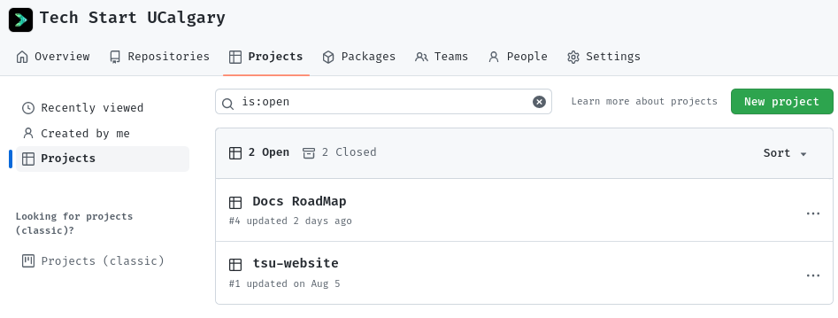
Then define some statuses:
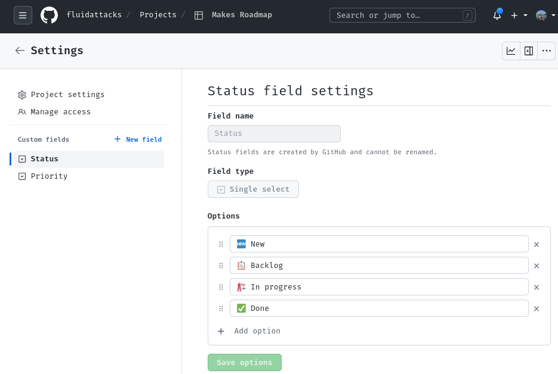
- 🆕 New: Where you place all of the issues initially.
- 📋 Backlog: The issues that are yet to be done, and their priority.
- 🏗 In progress: The issues that are being worked on, and who's working on them.
- ✅ Done: The issues that have been shipped.
Then, create a priority field:
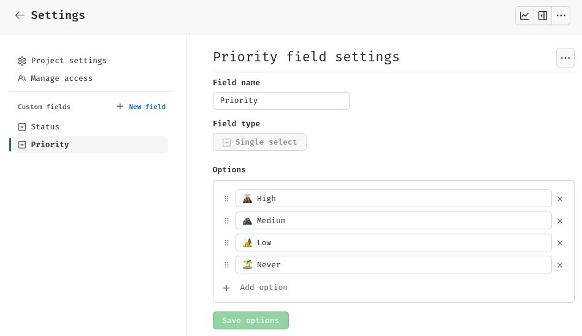
This will help your team focus on the things that are more impactful to your project.
You can use the Eisenhower matrix for this:
- 🌋 High priority: Issues that are important and urgent.
- 🏔 Medium priority: Issues that are important, but not urgent.
- 🏕 Low priority: Issues that are not important, but may be nice to have someday.
- 🏝 Never priority: Just close the issue :) don't waste your time on this.
Now you can start adding Issues to your RoadMap:
And see what is the progress towards each Milestone, for example:

Career Paths
There are several areas of software development that cover different aspects of the software development life cycle. Usually, people focus on only one or a couple of them. Each of them is a big area on its own and takes years to learn:
-
Front-end development: This area of software development is concerned with the user interface (UI) and user experience (UX) of software applications. Front-end developers work with technologies like HTML, CSS, and JavaScript to create the visual elements that users interact with.
-
Back-end development: This area of software development is concerned with the server-side of software applications. Back-end developers work with technologies like PHP, Python, Ruby, and Java to create the logic that powers software applications.
-
Full-stack development: Full-stack developers work on both the front-end and back-end of software applications. They have knowledge and skills in both areas of development and can build complete applications from start to finish.
-
Mobile development: This area of software development is concerned with creating applications for mobile devices. Mobile developers work with technologies like Java, Swift, and Kotlin to create native apps for iOS and Android devices.
-
DevOps: DevOps is a methodology that focuses on collaboration between development and operations teams to automate the software delivery process. DevOps engineers use tools like Jenkins, Ansible, and Docker to automate the software development process.
-
Testing and quality assurance: This area of software development is concerned with ensuring that software applications are reliable, bug-free, and meet the requirements of the end-users. Testing and quality assurance engineers use tools like Selenium, JMeter, and LoadRunner to test software applications.
-
Data science and analytics: This area of software development is concerned with creating applications that analyze and interpret data. Data science and analytics engineers work with technologies like Python, R, and SQL to build applications that can perform data analysis, machine learning, and statistical modeling.
-
Artificial intelligence and machine learning: This area of software development is concerned with creating applications that can learn and make decisions based on data. AI and ML developers work with technologies like Python, TensorFlow, and PyTorch to build applications that can perform tasks like natural language processing, image recognition, and predictive modeling.
-
Cybersecurity: This area of software development is concerned with creating secure software applications and protecting them from malicious attacks. Cybersecurity engineers work with technologies like encryption, firewalls, and intrusion detection systems to secure software applications.
-
Cloud computing: This area of software development is concerned with creating applications that can run on cloud computing platforms like Amazon Web Services, Microsoft Azure, and Google Cloud Platform. Cloud developers work with technologies like containerization, serverless computing, and cloud storage to build and deploy applications on the cloud.
-
Embedded systems: This area of software development is concerned with creating software for embedded devices like medical devices, smart appliances, and automotive systems. Embedded systems developers work with technologies like C, C++, and assembly language to create software that runs on these devices.
-
Augmented and virtual reality: This area of software development is concerned with creating applications that allow users to interact with virtual or augmented environments. AR and VR developers work with technologies like Unity, Unreal Engine, and WebXR to build immersive applications for gaming, education, and training.
-
Project management: Involves overseeing the entire software development process from conception to delivery. Project managers are responsible for ensuring that the project is completed on time, within budget, and to the required quality standards.
-
Product owner: The product owner is responsible for defining and prioritizing the features and requirements of a software application. They work closely with development teams, stakeholders, and customers to ensure that the product meets the needs of the users.
-
Technical writing: Technical writers create documentation and user manuals for software applications. They work with developers and other technical experts to create user-friendly documentation that explains how to use the software application.
-
User experience (UX) design: UX designers create the visual design and user experience of software applications. They work with developers to ensure that the application is easy to use and visually appealing.
-
Technical support: Technical support engineers provide support to users who are experiencing issues with software applications. They work with developers to diagnose and resolve technical issues, and provide customer support to users.
-
Technical architecture: Technical architects are responsible for designing the technical architecture of software applications. They work with development teams to ensure that the architecture meets the scalability, security, and performance requirements of the application.
-
Database administration: Database administrators are responsible for managing the data that is used by software applications. They work with developers to design and implement databases, and ensure that the data is stored and managed effectively.
Front End
A front-end engineer is a software engineer who specializes in building the user interface (UI) and user experience (UX) of a website or application. They are responsible for creating visually appealing and intuitive designs that allow users to interact with the application or website seamlessly.
The front-end engineer's job involves using various technologies such as HTML, CSS, and JavaScript to build the visual elements of an application or website. They work closely with designers to turn mockups and wireframes into fully functional websites or applications that are easy to use and navigate.
Front-end engineers also collaborate with back-end engineers to integrate the front-end code with the back-end code, ensuring that the entire system functions correctly. They are responsible for testing and debugging the front-end code, optimizing the code for performance, and ensuring that the website or application is compatible with different browsers and devices.
How to become a front-end engineer?
To become a front-end engineer, you will need to follow these general steps:
-
Learn HTML, CSS, and JavaScript (or TypeScript): HTML is used to structure web pages, CSS is used to style them, and JavaScript is used to add interactivity and dynamic behavior. These are the core technologies used in front-end development.
-
Learn a front-end framework: While it's not strictly necessary, learning a front-end framework like React can help you to build more complex web applications more efficiently.
-
Build projects: To gain practical experience, you should work on building your own projects or contributing to open-source projects. This will help you to develop your skills and build a portfolio of work that you can show to potential employers.
-
Stay up-to-date: Front-end development is a rapidly evolving field, so it's important to stay up-to-date with the latest technologies and best practices. Attend conferences, read blogs and forums, and participate in online communities to stay current.
-
Apply for jobs: Once you have the skills and experience, it's time to start applying for front-end engineering jobs. Look for job postings online, reach out to recruiters or companies directly, and attend networking events to make connections in the industry. Be prepared to showcase your portfolio and be able to talk about your skills and experience during interviews.
DevOps
DevOps is a software development approach that emphasizes collaboration and communication between software developers and IT operations professionals. The goal of DevOps is to improve the efficiency and quality of software development by breaking down silos and promoting a culture of collaboration, automation, and continuous improvement.
Traditionally (https://clickup.com/blog/waterfall-project-management/), software development and IT operations have been two separate functions within organizations, with little interaction between them. DevOps seeks to bridge this gap by fostering collaboration between these teams throughout the entire software development lifecycle, from planning and development to deployment and maintenance.
DevOps involves using tools and practices such as continuous integration, continuous delivery, and infrastructure automation to streamline the software development process and make it more efficient. By automating tasks like testing, building, and deploying software, teams can reduce errors, speed up the development process, and deliver software more quickly and reliably.
Overall, DevOps is a holistic approach to software development that aims to create a culture of collaboration and continuous improvement, with the goal of delivering software more efficiently and with higher quality.
How to become a DevOps engineer?
-
Understand the why and the high-level how (the philosophy).
For instance:
- Get to know The Three Ways: https://itrevolution.com/articles/the-three-ways-principles-underpinning-devops/.
- Read a book: https://www.amazon.com/DevOps-Handbook-Second-World-Class-Organizations/dp/B09L56CT6N.
- Win in this game: https://devops.games/.
-
Learn the core skills: DevOps engineers need a strong foundation in software development, You should have a basic understanding of programming languages, and be familiar with version control systems like Git. You should also have experience working with Linux/Unix systems and be familiar with cloud platforms like AWS, Azure, or Google Cloud Platform.
-
Gain experience with DevOps tools and practices: DevOps engineers should be familiar with tools and practices such as continuous integration/continuous delivery (CI/CD), infrastructure as code, configuration management, and monitoring and logging. You can gain experience by working on projects, contributing to open-source projects, or taking online courses.
-
Learn automation: Automation is a key part of DevOps, so you should have experience with containerization tools like Docker and Kubernetes.
-
Build projects: To gain practical experience, you should work on building your own projects or contributing to open-source projects. This will help you to develop your skills and build a portfolio of work that you can show to potential employers.
-
Stay up-to-date: DevOps is a rapidly evolving field, so it's important to stay up-to-date with the latest tools and practices. Attend conferences, read blogs and forums, and participate in online communities to stay current.
-
Apply for jobs: Once you have the skills and experience, it's time to start applying for DevOps engineering jobs. Look for job postings online, reach out to recruiters or companies directly, and attend networking events to make connections in the industry. Be prepared to showcase your portfolio and be able to talk about your skills and experience during interviews.
Technical Demos
Overview
At some point in your career you will need to demo some work you've done to both technical and non-technical stakeholders (people with an interest in the work you're doing).
When you do this, you want to make sure you give yourself and your team the best opportunity to show off your hard work. Here are some tips and ideas to think about when preparing, and do prepare if it's for anyone other than your own team.
Purpose
The work you did will have achieved something, whether it's fixing a bug, solving a problem for your users, or presenting an entirely new idea.
It's important to show this if you want to convince others that your work is important. Feel free to show the existing problem and then go into how you have addressed it, this will make the change that much more impactful.
Presentation
Live demos are always best, it proves to your audience that it actually works and that there's no smoke and mirrors hiding flaws. However, there are cases where live demos don't work out. Maybe you have a very slow running process, or your code just decides it's not going to work that day.
For slow processes, explain that it's slow and why, and let the audience know how you've addressed it in the demo to set the right expectations.
Here are some methods:
- Run the process before starting the demo in another tab/instance/device, and switch to that when you need to show what happens after it.
- Do something else while it's running, e.g. talk about some other detail in your presentation.
- Pre-record the whole demo and speed up or cut out the slow parts.
It's a good idea to have a well-edited pre-recorded demo to switch to as well, sometimes code just decides not to work!
Make sure you've practiced talking over the pre-recorded demo as well as the live demo so you're prepared for all cases, including switching from live to recorded halfway through.
Avoid Distractions
It's not the end of the world, but a notification popping up on your screen is distracting to the audience.
It's best to fully close all unneeded apps, turn on do-not-disturb, and full-screen what you're presenting.
This also goes for browser tabs and bookmarks, have everything as clean and empty as possible so all the focus is on what you're presenting.
Use Virtual Desktops on Windows and full-screen apps on MacOS. Place your presentation in one, and the demo in another, that way you can quickly and seamlessly switch between the two without alt-tabbing or exiting the presentation.
Prepare
Most importantly, rehearse the demo! Go through everything you want to show off, and have a good idea of what you want to say. It doesn't need to be perfectly memorized, but you should know exactly what you're doing next all the time. If you're working with a team, and one person is speaking and the other controlling the demo, make sure both of you are in sync. If you say "looking at the user profile page", the demo should immediately go there, without you having to ask your partner to do things which breaks the flow.
Finally, if (and when) something goes wrong, the best thing to do is to move past it. Bringing more attention to an issue can make it seem worse than it is. If things are really bad (app fully crashes, laptop catches fire), you have a recorded demo to switch to. Right?
References/Further Reading
How to create great tech demos and presentations - Thomas Maurer
13 Demoing Strategies That Make Tech Software Compelling
Tech Start's Django Guide
Django is a free and open source python framework that lets you build awesome backends for websites, apps, and more. You can use it to host databases and build secure APIs for them without writing a line of SQL. You can also use it to create multi-page applications with dynamically served content. It makes it easy to get started building complex functionalities by automating a lot of the boilerplate code that you'd normally have to write.
We recommend that you have a basic knowledge of python before using django! This will help you debug any errors that you get.

(Img src: https://medium.com/crowdbotics/when-to-use-django-and-when-not-to-9f62f55f693b)
Table of Contents
- Requirements
- Setup
- Installing Dotenv
- Installing Postgres and psycopg2
- Creating a Postgres database
- Connecting Django to Postgres
- Writing Models
- Run your app
- URLs
- Views
- Django REST Framework
- Serializers
- Django REST Framework: Class based Views
- Testing your API
Requirements
First you will need to install Homebrew, Python, Pip, and Pyenv. If you have not done so already, please follow the instructions in the Installfest section.
Setup
To create a Django project first wee need to create a directory for the project. To do so, run the following command:
mkdir <project-name>
Then, we need to navigate to the directory we just created. To do so, run the following command:
cd <project-name>
Now, we need to create a virtual environment for our project. To do so, run the following command:
pyenv virtualenv .venv
Then, we need to activate the virtual environment. You need to do this every time you want to run your project. To do so, run the following command:
source .venv/bin/activate
If you want to deactivate your virtual environment when you're done working on your project, run the following command:
deactivate
Now, we need to install Django. To do so, run the following command:
pip install django
To check if Django is installed, run the following command:
python3 -m django --version
Next, let's create a project.
django-admin startproject <project-name> . # the dot is important! it will create the project in the current directory
Good to know: Projects vs. apps
What's the difference between a django project and a django app? An app is a Web application that does something – e.g., a Weblog system, a database of public records or a small poll app. A project is a collection of configuration and apps for a particular website. A project can contain multiple apps. An app can be in multiple projects.
python3 manage.py startapp <your-app-name>
This creates an app within your project. You can create as many apps as you want within a project.
Next step: include your app in the INSTALLED_APPS fields in settings.py (just the name)
INSTALLED_APPS = [
'django.contrib.admin',
'django.contrib.auth',
'django.contrib.contenttypes',
'django.contrib.sessions',
'django.contrib.messages',
'django.contrib.staticfiles',
...
'your-app-name',
]
Installing Dotenv
Dotenv is a zero-dependency module that loads environment variables from a .env file into process.env. Storing configuration in the environment separate from code is based on The Twelve-Factor App methodology. To install dotenv, run the following command:
pip install python-dotenv
Then freeze the requirements. To do so, run the following command:
pip freeze > requirements.txt
This will create a file called requirements.txt that will contain all the packages that are installed in your virtual environment. This file will be useful for when you need to install the same packages in another virtual environment. After adding a new package to your virtual environment, you will need to freeze the requirements again.
Next, go to your project and create a .env file. To do so, run the following command:
touch .env
Then go to your settings.py file and add the following code:
from django.core.management.utils import get_random_secret_key
from dotenv import load_dotenv
...
load_dotenv()
# SECURITY WARNING: keep the secret key used in production secret!
# Copy the secret key from the .env file
SECRET_KEY = os.getenv("DJANGO_SECRET_KEY", get_random_secret_key())
Your .env file should look like this:
DJANGO_SECRET_KEY=your-secret-key
Installing Postgres and psycopg2
PostgreSQL is a powerful, open source object-relational database system with over 30 years of active development that has earned it a strong reputation for reliability, feature robustness, and performance. To install Postgres, run the following command:
brew install postgresql
To check if Postgres is installed, run the following command:
postgres --version
psycopg2 is a PostgreSQL database adapter for the Python programming language. To install psycopg2, run the following command:
pip install psycopg2
Then freeze the requirements. To do so, run the following command:
pip freeze > requirements.txt
Then go to your settings.py file and add the following code:
INSTALLED_APPS = [
...
'psycopg2',
]
Creating a Postgres database
To create a Postgres database, run the following command:
createdb <database-name>
Remember your credentials for the database. You will need them later.
It is also recommended to install pgAdmin, a free and open-source administration and development platform for PostgreSQL and its related database management systems. To install pgAdmin, run the following command:
brew install --cask pgadmin4
Connecting Django to Postgres
Add the following code to your .env file:
DATABASE_NAME=<database-name>
DATABASE_USER=<database-user>
DATABASE_PASSWORD=<database-password>
Now go to your settings.py file and add the following code:
import os
...
DATABASES = {
'default': {
'ENGINE': 'django.db.backends.postgresql',
'NAME': os.getenv('DATABASE_NAME'),
'USER': os.getenv('DATABASE_USER'),
'PASSWORD': os.getenv('DATABASE_PASSWORD'),
'HOST': "127.0.0.1",
'PORT': "5432",
}
}
Writing Models
Models allow you to define the content of your database. If you don't need content in your database, you won't need models.
You can follow along with this section here:
https://docs.djangoproject.com/en/3.1/intro/tutorial02/
More about models: https://docs.djangoproject.com/en/3.1/topics/db/models/
You will define all your models in models.py, located within the folder for your app.
from django.db import models
# Create your models here.
class Album(models.Model):
name = models.CharField(max_length=200)
artist = models.CharField(max_length=100)
year_released = models.DateField()
def __str__(self):
return str(self.name)
class Song(models.Model):
song_name = models.CharField(max_length=100)
album = models.ForeignKey(Album, on_delete=models.CASCADE)
num_streams = models.IntegerField()
def __str__(self):
return str(self.song_name)
Each model should correspond to the structure of a table of a relational model of a database. If you don't know what this means, ask someone who has taken CPSC 471 (or an equivalent databases course)
Django can convert these into real SQL tables!
- Good to know: Primary Keys: In the above example we didn't specify any ids for our models (normally, with databases, you want an id to be your primary key). Django automatically creates an ID field to be the primary key for each model and takes care of auto-incrementing, unless you specifically override it. I don't recommend overriding, it's not worth the effort (and its doubly complicated and not worth it to have a primary key composed of several fields)
- Good to know: str: the str function is Python's default function for string representation. In this case, it's good practice to override this for your models. This will help you understand your data if you login via the admin view (I'll show how to do this later)
- Good to know: Foreign Keys: See the Song model class for how you can reference a foreign key belonging to another model (in this case it refers to Album). You don't need to refer to a foreign model's keys directly, all you need to do is specify which table you are referencing. Also note: if you are referring to a table, it needs to be defined above the point in the code where you are referring to it.
There are more options that can be explored about how you can define your models, but this should be a good base for you to do your own research :)
Now we're ready to convert these into a real database! By default, Django will make a migration file that has your database.
Converting models into your database
https://docs.djangoproject.com/en/3.1/intro/tutorial02/
>> python3 manage.py makemigrations appName
Creates migrations for the changes you made in appName
>> python3 manage.py migrate
Migrates the changes you made into your database
Run your app
Whenever you are ready to run your server, just call this command!
python3 manage.py runserver
You should see something like this:
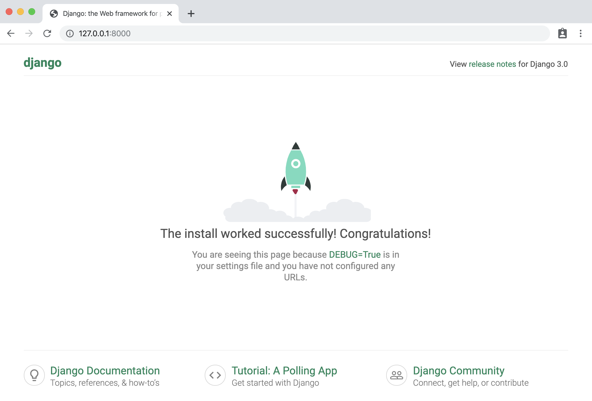
By default, this will run the Django server on localhost:8000. View the django documentation to see how you can run it on a different port. You can now access it from your web browser by visiting http://localhost:8000 !
You can also create a superuser (admin) to view the inner contents of your database. To do this, you first need to create them from the command line using the following command:
python3 manage.py createsuperuser --username yourNameHere --email yours@email.ca
This will create a super user with your provided info (it will prompt you to enter a password as well).
The following command creates a token for the superuser that you can use for authentication in requests. If you are not using Django Rest Framework, this is not applicable to you.
python3 manage.py drf_create_token yourSuperUserName
Note: if you're trying to run these for your deployed app on heroku, you need to prepend heroku run before those commands! See the Heroku section for a description on how you can deploy it.
You can see the admin page of your website to view the inner content of your database. This is automatically created by Django. Visit http://localhost:8000/admin and enter your passcode.
If you want your models to show up in the admin page, you will need to specify them in admin.py like this:
from django.contrib import admin
from .models import Album, Song
# Register your models here.
admin.site.register(Album)
admin.site.register(Song)
Once you log in to the admin site, you should see something like this. From here, you can add & remove database entries.

URLs
URLs allow you to define the paths that exist in your system, and what happens when you call them.
URLs documentation: https://docs.djangoproject.com/en/3.1/ref/urls/
How URLs are processed in Django: https://docs.djangoproject.com/en/3.1/topics/http/urls/#how-django-processes-a-request
Read more: https://docs.djangoproject.com/en/3.1/intro/tutorial03/
If you're constructing a big application, it's standard practice in django to include different _apps _for each part of your system, and link them to the main project.
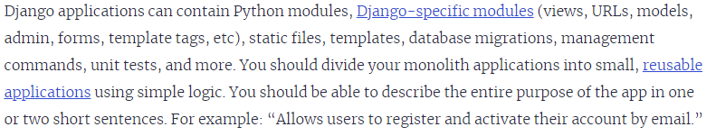
However, since we're only making small-scale side-projects, it's fine to ignore this best-practice and include everything in a single app. Just understand that in a large industrial scale project you wouldn't necessarily want to do this.
// urls.py in a project:
from django.contrib import admin
from django.urls import path, include
urlpatterns = [
path('admin/', admin.site.urls),
path('myApp/', include('myApp.urls'))
]
// example urls.py in myApp folder:
from django.urls import path
from . import views
urlpatterns = [
path('hello_world', views.ping, name='Hello World!'),
path('hello-x/<str:hello_to>', views.hellox, name='Hello to x'),
path('hello-x/<print_me>/print', views.printx, name='Print this!'),
path('goodbye', views.goodbye, name='goodbye'),
]
Now you can visit a path using http://localhost:8000/myApp/hello-world, for example.
Views
**Views **allow you to define what happens when you access a certain url in your system (using your browser, an API tool like Postman, or something else altogether). In your views, you could define interactions with the model (your database) or entirely different interactions altogether. You can use the definition of the view to call external processes.
If you want to make more complicated views and understand the Request and Response items, read this:
https://docs.djangoproject.com/en/3.1/ref/request-response/
To understand views more in-depth, read the documentation: https://docs.djangoproject.com/en/3.1/topics/http/views/
Here are some simple examples of what you can do with a view. Note that these are just examples and don't represent best practice at all.
from django.http import HttpResponse, response
# views.py
def ping(request):
myRes = "Hello World!"
return HttpResponse(myRes)
def hellox(request, hello_to):
myRes = {"My Reply": "Hello " + hello_to}
return response.JsonResponse(myRes)
def printx(request, print_me):
print("Hello to " + print_me)
return response.HttpResponseNotFound("I printed it!")
def goodbye(request):
if not (request.method == 'GET'):
return response.HttpResponseBadRequest()
queryParams = request.GET
msg = queryParams.get('msg', "Gamers")
return response.JsonResponse({"Reply": "Goodbye " + msg})
Now, we want to adhere to DRY (Don't repeat yourself) when creating views. Therefore, it is almost always best to define your views as Class-Based views (CBVs) which handle more of the boiler plate code for you and help ensure your views follow standards.
Please read more about class-based views here: https://docs.djangoproject.com/en/3.1/topics/class-based-views/
Both the above docs and the docs for views also show how you can interact with your database items through a view. But, if you're building an API, I highly recommend using the tools in the following section: Django REST Framework.
Once you have defined your views and given them a corresponding url, you can test them out.
python3 manage.py runserver
Run your server, and using either a web browser, or preferably an API testing tool like Postman (https://www.postman.com/) access the proper urls (ex. http://localhost:8000/myApp/hello_world) to see if they have the expected behavior.
Django REST Framework
Django REST Framework is an add-on to Django that makes it simple to develop REST-compliant APIs. There is great documentation here: https://www.django-rest-framework.org/ <--- FOLLOW INSTALL INSTRUCTIONS
What is a RESTful framework? Learn more here: https://restfulapi.net/
Django REST Framework provides you with tools to make class-based views to easily implement database CRUD (Create Read Update Destroy) operations, as well as define more complex operations.
Before we define any endpoints with Django REST Framework, let's make some serializers.
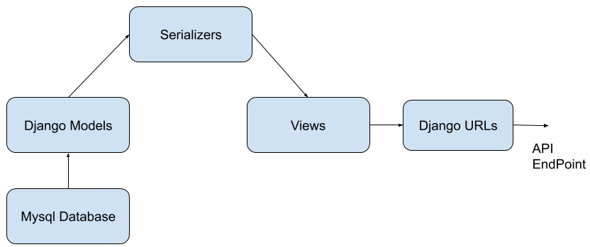
Serializers
Django REST Framework uses serializers as a way to perform **translation **of your models from your python code and your database into data formats like JSON and XML that an API might use. Read more about them here:
https://www.django-rest-framework.org/api-guide/serializers/
We should define some basic serializers so that we can make API endpoints that interact with the content of our database models.
- Create a new file called serializers.py inside the app you want to use serializers with.
- Create your serializers. Give them a relevant name (though the exact syntax is not important)
- List the fields that you want your serializer to translate. If you don't want it to translate a particular field, then don't include it.
Here's an example, using the Song and Album models we defined earlier. Here's what's at the top of serializers.py:
from rest_framework import serializers
from .models import *
class SongSerializer(serializers.ModelSerializer):
class Meta:
model = Song
fields = ("id", "song_name", "num_streams")
class AlbumSerializer(serializers.ModelSerializer):
class Meta:
model = Album
fields = ("name", "year_released", "artist", "id")
Make sure your fields match exactly the names that you used in your models.
You may be curious why I also included an id, when we didn't define one in our models- this is because Django auto generated an id for us in this models because we didn't specify a primary key. This id field always has the name id. It is often useful for our API, so we'll include it.
We can also create multiple serializers for the same models, if we wanted different behavior. For example, what if we wanted to include the album id of the song?
class SongSerializerWithAlbumId(serializers.ModelSerializer):
class Meta:
model = Song
fields = ("id", "song_name", "num_streams", "album")
This would include the album's PK (in this case, it's id, but if the PK was different, it'd be something else).
What if we wanted to include the full album info when an api request was made to see the song? Here's another example serializer that we could make:
class SongSerializerFullAlbum(serializers.ModelSerializer):
myFullAlbumDesc = AlbumSerializer("album", read_only=True)
class Meta:
model = Song
fields = ("id", "song_name", "num_streams", "myFullAlbumDesc")
It's using our album serializer from earlier to serialize a field, which must (read only is an optional parameter that makes it so that it's only included in reading requests, not create/update/destroy.)
This was just an introduction to serializers. If you want to use more complex behaviors, you'll have to do the research on your own.
Django REST Framework: Class based Views
Pre-requisite to this section: understand URLS and views in vanilla Django, and read the serializers section
More reading: https://www.django-rest-framework.org/tutorial/3-class-based-views/
Video overview of similar topic: https://www.youtube.com/watch?v=akvFA5VMXJU
You can use Django's Class Based Views to quickly create views that can do CRUD (Create, Read, Update, Destroy) operations on your database.
In views.py:
from rest_framework.views import APIView
from rest_framework import generics
from rest_framework import status
from .models import *
from .serializers import *
Some class based views that we'll define. Right now these are just the generic create, read, update, destroy views. By defining these views with the classes, Django REST Framework takes care of the default behavior for us. It's that easy!
class SaveSong(generics.CreateAPIView):
queryset = Song.objects.all()
serializer_class = SongSerializerWithAlbumId
class GetSongs(generics.ListAPIView):
queryset = Song.objects.all()
serializer_class = SongSerializer
class DeleteSong(generics.DestroyAPIView):
queryset = Song.objects.all()
serializer_class = SongSerializer
class UpdateSong(generics.RetrieveUpdateAPIView):
queryset = Song.objects.all()
serializer_class = SongSerializerWithAlbumId
Notice that we need to make the create and update serializers include the album ID- if we didn't then you couldn't create song objects since their album id must be _not null._This same principal applies to any model that has a foreign key which isn't allowed to be null.
Before we can use the views we created, we need to hook them up to a URL, just like you would for any other view. Do keep in mind that we need to call the as-view function on them, though. Here is an example of the URLs for the previous views. This pattern is how we normally define CRUD endpoint urls for any entity in a database
path('song', views.GetSongs.as_view(), name='songs'),
# Create a song
path('song/create', views.SaveSong.as_view(), name='Save Song'),
#Updates a specified license with information
path('song/<int:pk>', views.UpdateSong.as_view(), name='Update Song'),
# Deletes a song specified by pk
path('song/<int:pk>/delete', views.DeleteSong.as_view(), name='Delete Song'),
If you are using a pk that is not an int (you manually defined a pk instead of using the default id generated), you'll have to specify that accordingly.
What if we want more complex behavior beyond the default predefined classes? We can modify them to add more conditions to what is returned.
In this example, we added an optional way to filter songs by album, using a query_param called album. You'll need to read documentation and tutorials if you want to know more about the custom behavior you can define within your Django REST Framework views.
class GetSongInAlbum(generics.ListAPIView):
serializer_class = SongSerializer
def get_queryset(self):
queryset = Song.objects.all()
alb = self.request.query_params.get('album', None)
queryset = queryset.filter(album=alb)
return queryset
If you have a view that isn't necessarily linked to CRUD actions, or has more complex usage and needs more custom defined behavior, you can use APIView.
Test out your Django REST API
Compile and run your app with
python3 manage.py runserver
Use your bugfixing wizardry to fix any errors that might show up. Now you should be ready to give those predefined endpoints you made for a spin!
Here's some examples that I did using Postman for API testing. If you used Django REST Framework, it should also come with a built-in API testing tool that you can use in your browser.
Here's a simple GET request. This is a database read operation, and it's pretty simple. Your browser is making GET requests to every URL you visit while you surf the web.
| Request |

|
| Response |

|
Here's a POST request (it's post because we're _creating _or Posting new data) to our create route. We should include the key-value pairs for the song we want to create in the **_Body _**of our request.
| Request | 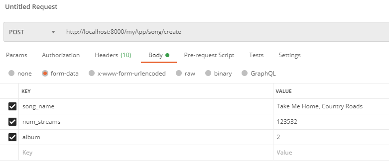 |
| Response | 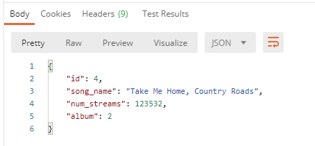 |
To update, let's follow the URL pattern we defined with the pk of the song we want to update. We can use PUT or PATCH. The info you're sending should be in the _Body _of the request, just like it was for our POST request.
| Request |

|
| Response | 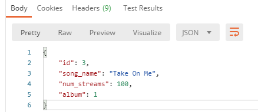 |
Let's do the same thing for our deleteSong view, but let's delete Taylor's song this time (pk: 2). I'm sure it was no good anyways.
| Request | 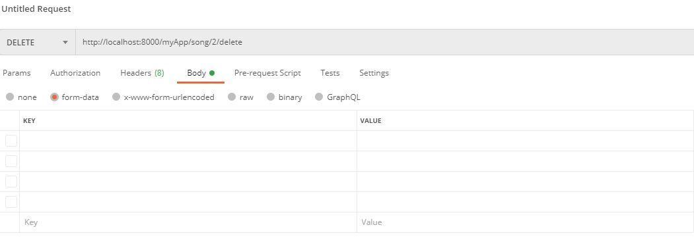 |
| Response |


|
Let's use our GET view to see what's inside the DB now:

**unimportant note: in my zeal to delete taylor's song I had a mishap and accidentally deleted song 3, which I have readded here using a post request. but it's id is now 5 :[
Finally, let's try out that "song with album" route. We'll add it to our urls.py:
# Probably not the best naming convention
path('songInAlbum', views.GetSongInAlbum.as_view(), name='Get song in album'),

Here's what our request will look like. ^^^^^^^^
Here's the response:

Good to know: Query Parameters
Notice how our query params don't have to be specified in urls.py - they are dynamically generated from the URL that we try access (everything that comes after a ? in a url is a query parameter, with keys and values separated by '='. If you had multiple query parameters they would be separated by '&'. Next time you're browsing the web, notice how query parameters are used across the different websites you visit!
It's easy to access query params within Django - see the getSongInAlbum view definition for an example.
Authtokens, users, logins with Django REST Framework
Up to now, we've covered the fundamentals of how to create a database, populate it, and create simple endpoints for creating, updating, and destroying. But what happens when we want our system to be used by real users? How do we store their information and their interactions with our system? There are a few important issues that we'll need to address:
- How do we make sure that users' personal information like their passcodes are being stored in a secure way that protects them from being stolen?
- How do we build a system that users can sign up for and log in to? How do we store info about their session?
- How do we make certain endpoints in our system behave differently depending on the user who is accessing them?
The answer to these questions can be complicated. In order to save your time and energy, we're going to utilize the resources that Django and Django REST Framework provide for us as much as possible instead of developing our own solutions. Not only is this easier, but it's also much more secure- would you trust a system written from scratch by a novice undergrad student with your password and financial information?
How do we store user's personal info?
The answer to this question is usually to use Django's built-in User model. You can read the docs on User models here:
https://docs.djangoproject.com/en/3.1/ref/contrib/auth/
The User model contains common fields that will be used by users, and in your serializers you can define which fields are relevant to your use case.
By default, Django builds the User models for you. You can see them after you runserver and check inside the /admin route.
We can also utilize the User model to build new endpoints in our API, just like we could with any other model. Here's an example:
Models.py
from django.contrib.auth.models import User
…
class UserLikesSong(models.Model):
user = models.ForeignKey(User, on_delete=models.CASCADE)
song = models.ForeignKey(Song, on_delete=models.CASCADE)
Serializers.py
class UserLikesSongSerializer(serializers.ModelSerializer):
class Meta:
model = UserLikesSong
fields = ("id", "user", "song")
#Id of the rel, Id of the user, ID of the song
You can now make endpoints with this just like you would with any other model/serializer. This specific example could be used to track what songs the User likes, like in Spotify.
If you wanted to make a custom User model, you could read more about it here https://simpleisbetterthancomplex.com/tutorial/2016/07/22/how-to-extend-django-user-model.html and do more research, as there are many methods you could use. For basic university usage though, it's 99% of the time going to be faster and easier to roll with the User model they give you out of the box.
If you want to give different categories of users different permissions, see the_ permissions _section (TODO: this won't be done for a while. In the meantime, these links may help: https://www.django-rest-framework.org/api-guide/permissions/ ← Technical overview
https://www.django-rest-framework.org/tutorial/4-authentication-and-permissions/ ← Basic usage example)
Signup, Login, Sessions: How do we do them?
I highly recommend using Django REST Framework's Authtokens to handle information about user sessions. You can read about authtokens, as well as the other options available, here: https://www.django-rest-framework.org/api-guide/authentication/#tokenauthentication
To add Authtoken's, make sure the following items appear in settings.py:
###### You will need to add the REST Framework part.
###### INSTALLED_APPS should already exist.
REST_FRAMEWORK = {
'DEFAULT_AUTHENTICATION_CLASSES': [
'rest_framework.authentication.TokenAuthentication',
],
}
INSTALLED_APPS = [ # There will be more here
'rest_framework',
'rest_framework.authtoken',
]
Note: I couldn't get these to work, at least not with authtoken. Leaving them here in case some enterprising individual finds them useful, or message us on Discord if you figure this out :)
To get REST Framework's default login and logout views (prebuilt), type this in your project's root urls.py file:
urlpatterns = [
...
path('api-auth/', include('rest_framework.urls'))
]
Your path doesn't have to be api-auth, it can be whatever you want.
To use REST Framework's login view, include this in urls.py:
path('whateverPathYouWantToLogin', obtain_auth_token, name='API Token Login'),
Include this at top of your urls.py:
from rest_framework.authtoken.views import obtain_auth_token
When you access this path and provide a real username and password in the request body, then you should receive an authtoken. This authtoken is associated with your account. Store this authtoken in a safe place. Now, you can use it in the "authorization" section of your next HTTP requests, and all requests you make from the client will be associated with the account you just logged in from.
Creating views for signing up is more difficult.
| In serializers.py:
This serializer will make sure that the password that the user makes is valid, and that it's write-only for security purposes. Choose which fields us |
| In views.py:
…
|
| In urls.py:
(you may want to put your register / login views together in a different Django App (so they are in a distinct section of your API) |
| Test Request in Postman:
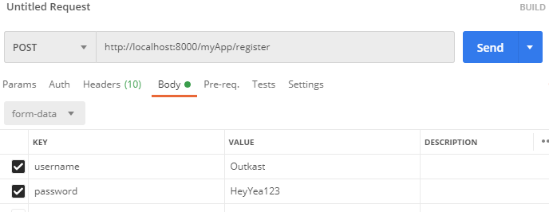 Response from request:
|

Now let's quickly do a login from this user we just created!
I did a login request to the login view I made earlier, but here's what I got:
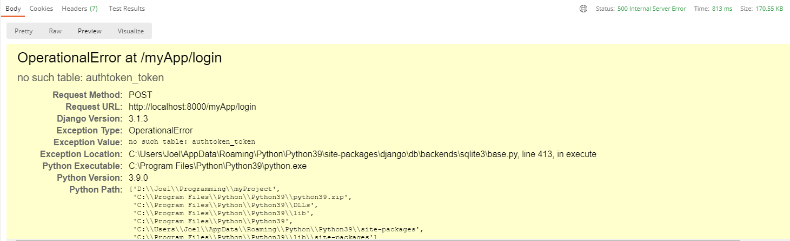
Whenever you see an error like "no such table", that should be a clue that you need to rerun migrations. The app expected there to be a SQL table, but there was none made yet! Running migrations will ensure there is. Recall the commands for migrations are:
python3 manage.py makemigrations yourAppName
python3 manage.py migrate
In this case, just the second command will be sufficient
Request:

Response:
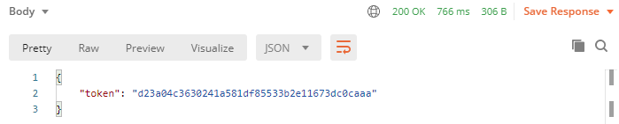
Yay! It worked! Now we can include this token in our request headers to associate all future requests made with the user we logged in.
In future requests, you should put the token as a value in your request headers, using the key: token.

Depending on the front-end you build, you should use a different way to store the authtoken that you get from logging in. Usually storing in local memory is okay. Do your own research for how to store authtokens with whatever system you are using.
If you want to improve security further, you can use JWT (JSON webtoken) instead, following the instructions here: https://simpleisbetterthancomplex.com/tutorial/2018/12/19/how-to-use-jwt-authentication-with-django-rest-framework.html
How do we make endpoints behave differently depending on which user is accessing them?
If a user makes a request while they are authenticated (using authtoken, or some other alternative method), then the system will automatically know what user is associated with the user who made the request.
You can access the user within a class-based view through
self.request.user
You can use this within your views in a variety of ways: to filter, to make more complex queries, and to check if the user should have access.
For example, let's make a UserLikesSong endpoint that is limited to the songs that the currently logged in user has liked.
class GetUserLikesSongs(generics.ListAPIView):
def get_queryset(self):
queryset = UserLikesSong.objects.all()
queryset = queryset.filter(user=self.request.user)
# Leftside of filter: from queryset. Rightside: how we're filtering
return queryset
serializer_class = UserLikesSongSerializer
We'll cover this in much more detail in the Permissions section.
Permissions
NOTE: Everything past here is incomplete - you will need to supplement it with your own research, like I did to make this guide!
To use generic permissions with Django, all you need to do is:
- In your views.py:
from rest_framework.permissions import IsAdminUser, IsAuthenticated, IsAuthenticatedOrReadOnly
Now, on any class-based view you want to guard with permissions, you can add the following line:
class deleteLicenseType(generics.DestroyAPIView):
permission_classes = [IsAdminUser]
queryset = License_Type.objects.all()
serializer_class = License_TypeSerializer
(this is from a different project)
You can apply multiple permissions to the same view like this:
permission_classes = [IsAdminUser|IsAuthenticatedOrReadOnly]
Sessions & Cookies
Sessions/cookies are very easy to make use of with Django. You can use cookies to store information in a user's browser that you'll be able to access in all subsequent requests that a user makes. One example of a good use of sessions/cookies is to store a user's shopping cart content.
Some great videos for learning about sessions & cookies:
https://www.youtube.com/watch?v=C75IW38hKI8
https://www.youtube.com/watch?v=RjykNmVdcgI
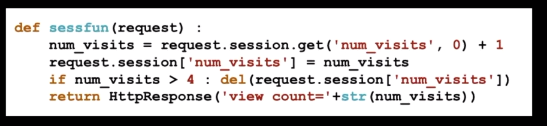
Deploy to Heroku
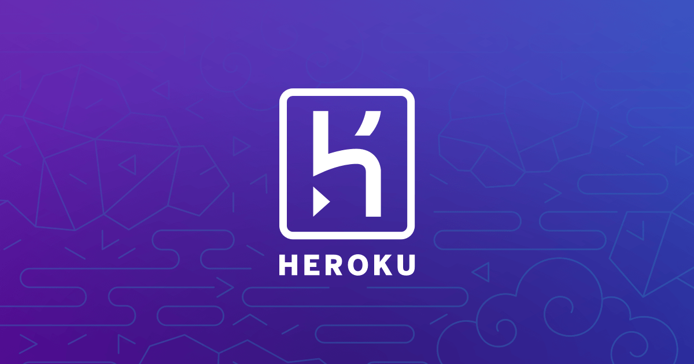
To get your projects online, you can deploy them to Heroku. Heroku is just one of several possible hosting services for Django- but it's base tier is free, easy to use, and simple to deploy to, so that's what I recommend you use. The biggest downside of using Heroku is that its free tier will automatically shut down your app after a period of downtime, meaning it'll take a long time to respond the next time you try to access it.
A guide on getting started:
https://devcenter.heroku.com/articles/django-app-configuration
Some useful commands:
pip install gunicorn
To deploy to Heroku, you will need to make a file called Procfile (no file ending), and add the following gunicorn text to it:
web: gunicorn yourAppName.wsgi
This gunicorn file should be at the same level as your manage.py file. When you deploy to Heroku, you should be deploying from this level of the project hierarchy to avoid issues.
Your remote heroku environment needs to understand what requirements it will need to have to start up. You can do this by providing it with a requirements.txt file which will also be at the same level as your manage.py file.
To get the right requirements in a .txt file, type
pip freeze > requirements.txt
These commands will help initialize your heroku repository:
heroku create
heroku run python3 manage.py migrate
heroku run python3 manage.py createsuperuser
Important: Your database itself will not transfer to Heroku. You will need to recreate all entities, config, and users.
Tech Start's Git Guide
Contents
- Getting Started - Setting up a Repository
- Git Analogy
- GUI vs Command Line?
- Staging Files & Creating Commits
- Common Commands
- Branches
- Remote Repositories
- Merge Conflicts
- Using GitHub
- Our recommended Git workflow
- Big Picture Git/GitHub Workflow
- FAQ
- Advanced Section
- Git Stash
- Git Clean
- Undoing Commits & Changes
- Git Rebase and Git Merge
Note
Unless otherwise stated, all git commands are one line terminal commands
We are also assuming that you have set up a project at /path/to/project and had cd'ed to /path/to/project
Getting Started - Setting up a Repository
A Git Repository is virtual storage of your code, allowing you to save versions of your code, as well as share and allow others to edit the code.
Initializing a new repository: git init
- This step is typically used by the project manager, or the owner of the project
Cloning an existing repository: git clone [GitHub git link]
E.g. git clone https://github.com/techstartucalgary/tsu-website.git
- This step is typically used by the project members, or anyones who wants to add onto the projects after it has already been created
- The GitHub git link can be located on the GitHub repository website under the
<> Codedropdown
Git Analogy
Imagine that we have two people working on the same paper remotely, Person A and Person B. Person B is the laziest of the two, so Person A starts the paper.
Person A choses to create a word document on their local machine. This can be seen as Initializing a new repository.
After working on the paper for a bit, they realize that Person B also needs to contribute, so they send the paper by email to Person B. This step is equivalent to forking a repository.
Person B decides that they would prefer to work on the paper by hand, and so they takes the email that Person A sent, and prints it to work on, cloning the repository
GUI vs Command Line?
There are a number of great GUI (graphical user interface) tools that simplify the process of using Git, like GitHub Desktop, GitKraken, and the built-in Source Control tab in VSCode. There's nothing wrong with using these tools, but we like to encourage our members to use the command line in order to get a better understanding of what exactly you're doing. It's also universal, so whatever you learn here can be used in any organization that uses Git!
Staging Files & Creating Commits
Git works using units of change called commits. These commits are essentially snapshots of your project. To share any changes, additions, and deletions that you make with other people and upload it to the internet, you will need to package them into a commit first.
You can think of the staging area of git (the green box that says "staged changes" in the below diagram) like a box. You can add and remove changes from the box on a per-file basis.
Committing is like sealing that box and sticking a label on it. The contents of that box are your changes. But, if there are changes in the untracked or unstaged areas, they will not be included in the commit, because they are outside of the box.
The following diagram shows how the staging process works, and what commands you can use to move changes (again, per-file basis) between areas. Use the git status command to see a summary of where every change in your project is on this diagram! We recommend using git status frequently.

Common Commands
Here are some common commands for using Git to store and prepare the code to be pushed to the remote repository. They are shown in the general order that you want to use them in.
Below is the legend for some common, optional parameters which are shown
- (-text) = optional parameters for command, which are called as is (
git command -text) - <helloWorld> = optional parameters for command, which are called with your version of the name (
git command helloWorld) - For example: For
git add [path], you should replace[path]withpath/to/your/file, so the final command isgit add path/to/your/file
git status
Shows the status of all changes (all staged or unstaged changes, not committed changes). It shows where every change is on the diagram above, and even lists some helpful commands.
It will also say what branch you are on, and if you are ahead or behind the remote version of your branch in terms of commits (more on this in later sections).
Additionally, if you have a merge conflict, it will show which files caused it.
git add [path/to/file]
git add app/pages/HomePage.tsx
Selects the specified files, moves it to the “staging area” to be included in the next commit.
This command will also allow adding a deleted file to be staged, which after being committed and pushed will remove the file from the git branch.
This command will ignore all files in the “.gitignore” file.
[path/to/file]File path expression. Any files which match the expression are acted upon bygit add- You can use
git add -pto add parts of a changed file if needed. - Pro tip: You can use
git add -Ato add all changed files! Read about why you shouldn't always do this.
- You can use
git commit -m "[commitMessage]"
git commit -m "Updated homepage text"
Creates a new commit that includes all changes that you added to the staging area.
You always need to include a commit message (-m) for your commit . It is helpful to be as descriptive as possible!
If you don't use the -m flag and provide a commit message in quotations, Git will make you write a commit message using a text editor. However, this can be very confusing since your default Git text editor is often configured to be VIM (stuck in VIM? type :qa to exit). For this reason, we recommend always specifying the commit message using -m.
After you commit, these changes are no longer in the staging area - they are in your commit!
-
(
-m) means you will be specifying a commit message in quotations -
"[commitMessage]"the message that will be attached to the commit. Only usable if-mis used, otherwise a text editor will appear for the commit message. -
Tip: always wrap your message in double quotes (
"). This lets you use abbrevations in your message (... -m "Reverted Ben's Changes")
git restore [path/to/file]
git restore app/pages/HomePage.tsx
Discards local changes in a file, thereby restoring its last committed state.
Think of it like a super-undo, allowing you to quickly get rid of accidental or unnecessary changes, restoring your files to how they used to be before you changed them.
It won't work if your file is already staged - you'll have to unstage it with git restore --staged [path/to/file] first.
git restore --staged [path/to/file]
git restore --staged app/pages/HomePage.tsx
Removes the file from the Staging Area, but preserve all modifications you made to it. You can use it if you accidentally added a file to the staging area whose changes shouldn't be included as part of the next commit you are planning to make. If the file was originally untracked, it becomes untracked again. If it was originally a file with unstaged changes, the changes become unstaged again.
Naming commits
When you create a commit, you always want to include a descriptive name for the commit that describes exactly what it accomplishes. You wouldn’t label a moving box with kitchen items as simply “stuff”. Remember that other people will see these commit names, so make it easy for them to understand!
For a video tutorial on staging files, watch this
If you want to learn about additional flags and commands you can use in the process of staging files and adding commits, see the section Advanced Staging & Commits
Branches
Branches represent an independent copy of the code that has branched off the main code at a certain time. They allow new features to be worked on, while ensuring that a working version of the code is not tampered with. This allows large changes to be made to the code base, with little fear of breaking your projects.
git branch
Lists all branches in the current repository
git branch [branchName]
git branch ben/updateFont
Creates a branch called branchName in the current repository.
The created branch's commit history will match the branch you were on when you called git branch.
We recommend naming branches according to what you want your branch to do, prefixed by your name.
For example, if I was updating the font on a website, I might call my branch ben/updateFont.
Since branch names include whitespace, we recommend using camelCase to name them, but check with your PM
how they want to handle this.
git branch -d [branchName]
git branch -d ben/updateFont
Deletes the branch called branchName
Note: you cannot delete the branch you are one! git checkout to another branch first.
(You can use -D instead of -d to force delete the specified branch, even is it has unmerged changes.
It's typically better to use -d, unless you are 100% sure you will never need the branch you are deleting again)
git checkout [branchName]
Navigates your current directory to the specified branch, allows you to select which line of development you are working on.
You can only switch branches if you have no unstaged/staged changes in your current branch. If you can't switch branches because of this, see What happens if you can't checkout? for more instructions.
Pro tip: You can use git checkout -b [branchName] to create a branch and switch to it immediately.
How to use branches
Some rules (more like guidelines):
- Every single time you start modifying the code you should create a new branch to use
- Branches should generally only be for one feature
- Always branch off
main
Before you make your branch, you should make sure you are creating your branch based on the most recent code. Do git checkout main to switch to the primary branch of your repository. You should also do git pull to make sure the primary branch is up to date with the version present on your remote repository (more on this in the next section).
Now that you are on the primary branch, use git branch [branchName] to create a new branch based on the current one. Make sure you name it according to what you aim to accomplish there (see the description of the command above).
Now that you have created your branch, you'll want to switch to it. Use git checkout [branchName] to switch to your branch. You can do work here and follow the instructions in the staging files and creating commits section to save your changes into commits.
Eventually, you'll be done using the branch (perhaps you will follow the instructions in the next few sections to push it to your remote repository and use it in a pull request. or perhaps you need to work somewhere else). Either way, you can switch to a different branch with git checkout [branchName]
If you have completed a pull request for your branch to merge it into a different branch of your project, you no longer need to keep the local copy of your branch. We recommend you use git branch -d to delete any branches you will no longer need to use. This makes sure your local repository remains nice and tidy.
Here's a quick summary of the commands:
git checkout main
git pull
git branch ben/updateFont
git checkout ben/updateFont
... doing stuff ...
git checkout main
git branch -d ben/updateFont
What happens if you can't checkout?
Git will not let you checkout to switch branches if you have staged or unstaged changes.
You will have a few choices on what to do:
- Restore files to how they originally were (either by manually undoing, or ideally making use of
git restore, described in the previous section). Do this if any of your changes are unnecessary or accidental. - Create a commit, following instructions from the previous section. Only create a commit if you actually want to save the changes you made.
- We recommend you avoid making commits on any branches that you share with other people, especially your primary branch (
main)! All Tech Start repositories actually prohibit commits tomainto prevent this.
- We recommend you avoid making commits on any branches that you share with other people, especially your primary branch (
- Utilize
git stashto move changes from one branch to another without needing to commit them. Do this if your changes are intentional, but you wanted them on a different branch than the one you are currently on. This is described in more detail here.
You can combine these approaches to deal with your changes as necessary.
Remote Repositories
When you work with Git, you will typically have a local repository (the copy of your project that exists on your personal device) and a remote repository (the copy of your project that exists on the internet, usually on a service like GitHub, GitLab or BitBucket)
An absolutely core part of using Git is managing the interactions between your local repository and the associated remote repository. The two key commands you will need to learn are git push (which you can use to push commits from your local repository to the remote repository)
and git pull (which you can use to pull commits from the remote repository and insert them into your own local repository).
A common mistake that newcomers to Git will make is assuming that the local repository is the same as the remote repository - when they're actually 2 separate concepts. Your commits won't appear on the remote repository until you manually push them there. If someone else pushes new changes to the remote repository, you won't see their changes on your local repository until you manually pull those changes to your device.
Most version control related work happens in a local repository(staging, committing, viewing status, etc.). Remote repositories come into play when you start working with others on the same project. You can think of it as a cloud file server that you use to collaborate with others.

| Local | Remote |
|---|---|
| Are located on the computers of the team members | Are on the internet or a local network |
| Contains branches, commits, tags | Contains branches, commits, tags |
| All “coding work” happens only in the local repository, and needs to be made and committed locally. | After the work has been committed locally, it can be “uploaded” to the remote repository in order to share with others. |
Note: You can name a local branch the same name as the remote branch, but they are NOT the same
Note: You can also have multiple remote repositories (default is origin), though you probably won't need this,
since each local repository stores what it's remote is.
git fetch is what you do when you want to see what everybody else has been working on. It doesn’t force you to actually merge the changes into your repository. This makes fetching a safe way to review commits before integrating them with your local repository.
You might be wondering how to set a remote, and the good news is that if you cloned your repository from GitHub,
it's been set for you, so no need to worry!
If you need to change the remote for some reason, you can do git remote set-url origin <url>
git pull [remoteName] [branchName]
git pull origin ben/updateFont
Pulls all changes/commits from the specified remote branch, and inserts them into your current branch.
Pro tip: Use git pull without any other options to update the branch you're on. You'll most likely only use this to update main.
More technical description: fetches from the remote branch (git fetch), and merges your current branch with commits from the remote (git merge)
[remoteName] [branchName]pulls from a specific branch, which you specify
git pull origin main
Fetches commits from the master branch of the origin remote (into the local origin/master branch), and then it merges origin/master into the branch you currently have selected
git push
Updates the remote branch with your staged, local commits
Always pull before pushing to a branch to avoid unwanted merge conflicts and errors..
Merge Conflicts
Conflicts generally arise when two people have changed the same lines in a file, or if one developer deleted a file while another developer was modifying it. In these cases, Git doesn't know which change is correct. Git will mark the file as being conflicted and halt the merging process. It is then the developers' responsibility to resolve the conflict.
Although they look scary, resolving merge conflicts is a completely normal part of working collaboratively.
The general steps for resolving merge conflicts can be seen as:
- Figure out the conflicts and change them accordingly
- Re-commit the changes
- Attempt to merge with the selected branches
- Read error messages (if any) and repeat if necessary
Some useful commands for attempting to fix merge conflicts
| Command | Description |
|---|---|
git status | Help identify conflicted files |
git log --merge | Produces a log with a list of commits that conflict between the merging branches |
git diff | Finds the differences between the states of a repository, which helps in preventing conflicts |
git reset --mixed | Undo changes to the working directory and staging area |
Example of Merge Conflicts shown in Command Line

In this case, there are two instances of the file “merge.text” that were modified by different branches/people. Git is unable to determine which lines to keep, as both were changed manually.
Resolving Merge Conflicts
- Identify Conflicted Files
Git will notify you if there are any merge conflicts after running git status. You can identify these conflicts by looking at your project files. Conflicted files will have markers like <<<<<<< HEAD, =======, and >>>>>>> [branch name] where the conflicting changes are.
- Open the Conflicted File
Use a text editor or an integrated development environment (IDE) like VS Code to open the conflicted file. Inside, you will see the conflicting sections clearly marked by symbols.
- Resolve Conflicts
Review the conflicting sections and decide which changes to keep. You can choose to keep your changes, the incoming changes from the other branch, or a combination of both. Make your edits, then remove the conflict markers (<<<, ===, >>>).
<<<<<<< HEAD
// Your changes
=======
// Incoming changes
>>>>>>> [branch name]
- Save the File
Once you've resolved the conflict, save the file.
- Add the Resolved File
Use git add command to stage the resolved file.
- Continue the Merge
After resolving all conflicts, use git commit to finalize the merge.
git commit -m "Resolved merge conflicts"
- Push Your Changes
git push your changes to the remote repository.
Merge conflicts can be complicated to resolve, so make sure you communicate with the person who created the branch you have a conflict with to ensure you don't lose their work.
Remember that Incoming changes are from the other branch, while Current changes are from your branch.
It also doesn't hurt to use a tool that's purpose-built to resolve merge conflicts. VS Code has one built in, but there are a number of free options available online.
Using GitHub
GitHub is a company that provides a service of hosting Git repositories online. There are many other alternative companies that provide a similar service, like BitBucket, GitLab, and Azure DevOps, but GitHub is the most popular one and the one our project teams use.
The instructions for the rest of this section will focus on GitHub's features. However, almost every feature described here has equivalents in the other git hosts, so if you know how to use one you generally know how to use them all.
Pull requests
A pull request is a way of merging code from one branch of your remote repository into another.
You are requesting that the base branch pulls the commits from the compare branch. In the above example, you are requesting that the main branch pulls the commits from the addLaunchEvent. In other words, you are taking the changes from compare and putting them into base.
You will use pull requests extensively as part of your Git workflow.
We encourage teams to use small, frequent, single-feature PRs. Ideally each PR should be associated with only one branch, and each branch to only one PR. Each PR should have a name that describes exactly what the PR accomplishes. By doing smaller PRs, you will make sure everyone frequently updates their codebase so you don't end up with massive merge conflicts. By limiting your PR to a single feature, you also make it super easy to roll back that feature and reverse all commits in the PR by reverting the PR itself.
Advantages of pull requests:
- They enable your team to do pull request reviews (see more below)
- Your team can set up custom tests / deployments using CI/CD methods to ensure that your code runs as expected before you merge it
- It enables you to double check what code you are adding
- If you ever need to undo a pull request, it's very easy. Most git hosts have an easy way of reverting a pull request- usually it will create a new branch and PR itself, from which you can solve any merge conflicts and quickly roll back the code added from a previous PR.
- If you stick to coding 1 feature per pull request, it makes it very easy to understand the history of your repository
Sometimes, when you create a pull request, it will say there is a merge conflict. If this happens, don't force the PR to merge! Instead, you'll want to resolve the merge conflict.
Steps:
- On your local machine, checkout to the "compare" branch -
git checkout addLaunchEvent - Once you are on the compare branch, do a git pull from the base branch of your PR -
git pull origin main - This will pull changes from the base into your compare branch. Git will notify you that this caused a merged conflict. This is okay!
- Resolve the merge conflict according to the instructions in the Merge Conflicts section. You'll need to add and commit the files where you solved the merge conflict.
- Confirm you have resolved every merge conflict. Try running/building your app again to make sure everything works as expected.
- Push the commit(s) that solved the merge conflict to your remote compare branch
git push origin addLaunchEvent - The pull request should now update saying there is no merge conflict! You can merge it now, as long as your team approves of it.
Additional readings on pull requests:
https://product.hubspot.com/blog/git-and-github-tutorial-for-beginners
https://yangsu.github.io/pull-request-tutorial/
Pull Request Reviews
One of the main advantages of pull requests is that they enable you to do a pull request review, ensuring that code that gets pulled into your primary branches has been reviewed by your team to make sure it won't introduce code smells or bugs.
PRs provide the opportunity to review another developer's code and make sure that it meets the guidelines or practices that your organization or team has. For example, if you have a developer who is more familiar with the architecture of the software system, they can provide valuable input towards making sure that your changes fit within the long term architectural vision of the system. Alternatively, you can have a newer team member who is not yet familiar with the overall code structure and they can add comments to specific parts of the code in a PR to ask for further clarification for why a certain change was made.
Aside from learning, PRs generally serve as a major communication channel for developers in industry, because they provide the opportunity for automated testing and improvements before your code changes are moved to the next deployment stages. One example of automated testing is using linter which is a static code analysis tool used to flag errors in your code such as bugs, stylistics errors, and suspicious constructs, like for example declaring a variable twice.
Whenever someone wants to merge a pull request, you should require them to get their PR reviewed first. To review a pull request, look at all the changes they made.
Best Practices for PR Contributors:
- Review your own PR before adding reviewers.
- You may find some work-in-progress or experimental code. There could also be a typo, unintended indentation, or extra line breaks.
- Link your PR to your issue.
- Include a brief description of your changes.
- Push small incremental commits to your PR.
- You can also mark your PR as a DRAFT PR in GitHub. This pre-commit review can be good practice to check with reviewers if you are going in the right direction before making any more code changes.
- Add additional comments to your PR to guide reviewers through the review.
- Highlight areas reviewers should focus on.
- Clarify changes with comments and additional references.
- Favor adding code comments over PR comments as the code comments will out survive the PR comments.
Best Practices for Reviewers
- Be fast, not furious
- Responsiveness and turnaround time are very important to keep PRs healthy and not go stale due to other changes which may have been merged during the time that the PR is open and may even introduce new merge conflicts.
- Either as a reviewer or as an author, you should keep the conversation actively going until the issue is resolved.
- As a rule of thumb, if the PR is small or trivial, you should review it within one business day.
- Plus, context switching is very expensive in industry. Many developers, like myself, have the memory of a goldfish when it comes to remembering the code we wrote a day ago. So, as a courtesy, you can let the developer who opened the PR know if you are planning on looking at their PR at a later time. If there are PRs open, it is also good practice to review them before you create a new one yourself.
- If there are outstanding comments or the PR is in draft mode, do not approve the PR.
- Instead, stay involved and follow the discussions and new changes to see how the PR pans out.
- Do NOT rubber stamp reviews.
- If you do not understand a change, you can ask for clarification or justification in the comments.
- You do not have to approve a PR if you are not actually approving the change. You can let the author know that you have completed your review but are not weighing in on the approval.
- Our TechStart website team's default PR policy requires approvals from 2 different reviewers, but an approval that is rubber stamped can be more harmful than abstaining if it promotes bad practices and bugs to be user-facing.
- Provide constructive comments
- Code reviews are an important step in ensuring we build high-quality software products. As a reviewer, it's your job to carefully read and think about the code you are reviewing, and provide constructive feedback or ask questions about the code if things are unclear.
- If the code isn't formatted correctly, too confusing, contains mistakes, or follows poor conventions, leave a comment to tell them what they did wrong and how they might be able to fix it (but phrase everything constructively! you don't want to seem rude or aggressive).
- If you disagree with something, give a reason and an example of a better solution. Let the author know exactly what you think is better.
GitHub and other Git hosts support adding inline comments, so you can comment on specific areas of the code when necessary. The best place to do this is the "Files Changed" tab of a pull request.
It is up to them to address every issue that is brought up, and push the changes back to their branch. They should let you know when they've completed everything, and you can check to make sure you're happy with their changes.
Our recommended Git workflow
Let's assume you have some commits on branch yourLocalBranch, and you want to merge them into a branch on your team's GitHub (which uses the default remote alias, origin) called branchYouWantToMergeTo.
Part 1 - Set up your branch:
- Ensure you are on the main branch of your repository. It is usually called
main. If you are not on themainbranch, switch to it withgit checkout main - Pull the most recent version of your main branch from GitHub. You can do this with
git pull origin main. This will make sure your new branch contains all the most recent changes - Create a new branch for yourself. The name of the branch should describe what the code inside will do, and you should prefix it with your name or nickname. For example,
git branch joel/changeButtonColor - Check out your new branch before you make any changes. Example:
git checkout joel/changeButtonColor. Refer to Branches if you make any mistakes.
Part 2 - Make your commits:
- Follow the instructions in the Staging Files and Adding Commits section to create a commit containing your desired changes. Use
git statusfrequently to make sure you are doing everything correctly.
Part 3 - Push your commits to origin:
- Push your branch to origin. Ex.
git push origin joel/changeButtonColor - Set up a pull request on GitHub, with the base as main (or the branch you want to merge to) and the compare branch as your branch, (ex joel/changeButtonColor)
- (Only if your pull request indicates you have a merge conflict): DO NOT merge the branch. Instead, do
git pull origin main(or the branch you want to merge to) on your local machine. This will bring up the merge conflict. - Follow the instructions in Merge Conflicts to fix any merge conflicts that you get from pulling that branch. Once you have fixed all merge conflicts, remember to double check that your code runs, then
git addandgit commityour fixes! - Push your changes to your remote repository! Do
git push origin yourLocalBranch - Now that your changes are present on your remote repository, you should create a pull request on GitHub. The base (target branch) should be
branchYouWantToMergeTo, and the source should beyourLocalBranch. - Check to make sure the pull request says "No merge conflicts". If it does detect merge conflicts, that means you didn't do steps 4-7 correctly, so redo them!
- Request a reviewer for your pull request. They will read your code and offer suggestions on how to improve it.
- Resolve the comments of your reviewer. Once they are resolved and your reviewer confirms you can proceed, you can merge the pull request on GitHub. Congratulations! Your code is now merged into your project.
Clean up:
- Delete your branch on the remote repository
- Delete your branch on your local system (checkout to main. Then delete with
git branch -d yourBranchName)
Big Picture Git/GitHub Workflow
Now that you understand the complete process on an individual level, let's take a step back to understand how your team will be using git.
Here is the Git workflow we recommend:
This is what is used at Microsoft. It works well and it's good practice to teach it.
- When a team member wants to make changes or additions to the code, they should create a new branch for themselves. The branch name should describe what it does, ex.
fixButtonGlitch - They
git pushtheir code to a branch on your origin repo that shares the same name - When they're ready, they create a Pull Request on GitHub. The PR's source should be their branch, and the destination should be
main. - They should describe their Pull Request in the description and provide screenshots if applicable
- They merge their own PR, once the following 3 conditions are met:
- There are no merge conflicts with the base branch
- If your project has Continuous Integration (which it should), the PR build succeeds
- At least 2 people have reviewed the code in the PR (more on code reviews later) and all comments from code reviews have been resolved
- Upon merging the PR, they delete their branch.
FAQ
-
What should I do if I made a commit in the wrong branch?
- Refer to undoing changes and commits
-
What should I do if I started work in the wrong branch but not committed yet?
- Refer to undoing changes and commits
-
What if I want to revert a commit?
- Refer to undoing changes and commits
-
How do I push code from my local branch to a remote branch that has a different name?
- In order to push your branch to another remote branch, use the “git push” command and specify the remote name, the name of your local branch as the name of the remote branch
-
How do I create a new local branch based on a pre-existing remote branch?
-
What do I do if my pull request says it has merge conflicts?
Advanced Section
Here are some advanced Git commands you can use to boost your Git game to the next level. They are not essential to using Git, but you may find them helpful. If you're still learning the beginner commands, we recommend focusing on them until you're comfortable with them before worrying about these advanced commands.
Advanced Staging and Commits
Here are some additional commands and flags for existing commands that you can use while you are staging files and adding commits.
If you want descriptions of the basic staging and commits, please see staging files & creating commits in the beginner part of the guide.
git status (-s) (-v)
(-s) displays information in a shortened and fast format
(-v) displays information in more detail, with additions such as the textual changes of uncommitted files
git add [fileName or folderName] (-u)
You can use the -u flag on git add for the following effects:
(-u) adds new/modified files and IGNORES deleted files to the staging area
git commit (-a) (-am) "[Commit message here]"
You can use the -a and -am flags on git commit for the following effects:
(-a) commits all files in the staging area
(-am) commits all files in the staging area and allows the addition of the commit message in the command
"[Commit message here]" the message that will be attached to the commit. Only usable if -m or -am is used; otherwise, a text editor will appear for the commit message.
Git Stash
🚧 Under Construction 🚧
Git Clean
🚧 Under Construction 🚧
Undoing Commits & Changes
Below is the general sequence of commands to check, and undo previous commits. Notice that we must use the commit comments as the easiest factor in differentiating between commits. It is important to use a descriptive comment for each commit.
git log
Displays old commits with the ID hash and commit comment on the current branch.
git checkout [id hash]
Will make your working directory match the exact state of the id’ed commit.
Nothing you do here will be saved to the current state of the project (to go back do git checkout main).
git clean (-f) (-n)
git clean -n shows which UNTRACKED files will be removed, should you do git clean -f.
Good practice is to always -n before you -f. Learn more
(-n) runs a dry run (previews what files would be removed).
(-f) to force untracked file detection (removes the files).
git revert
Undoes a single commit.
git reset [id hash]
Goes back to the specified commit by removing all subsequent commits.
Git Rebase and Git Merge
git merge [branchName]
Merges the specified branch into the branch that your local directory is currently on. In a typical workflow, you will not need to use this command ever. Instead, git pull and pull requests will handle all merging for you.
🚧 Under Construction 🚧
Tech Start's API Guide

APIs are a ubiquitous component of software engineering. APIs allow different components of a software system to interact with each other in a logical way.
Learning about APIs is critical to your growth as a software developer. This guide contains links and advice to get you started!
Introduction
What is an API?

API stands for Application Programming Interface, and in simple words, allows two applications to talk to each other and send information between the two.
Further reading on the basics of APIs: https://www.plektonlabs.com/api-101-what-are-they-and-how-do-they-work/?gclid=Cj0KCQiAhf2MBhDNARIsAKXU5GRbLqWDWBPN0Zh4ZX6KwjevURl9KmQo0EVBzLn5mcePxaI_l1oWQSQaAkGDEALw_wcB
Analogy of an API
Imagine you are sitting in a restaurant with a menu and you are trying to decide what to order. You are one of the applications and in order to get food, the kitchen will act like the other application. It is the system that will “make” you food. The waiter in this scenario will be the API, and he/she delivers the food from one application(the kitchen) to another(you). The waiter is the messenger that takes your request or order and tells the kitchen – the system – what to do. Then the waiter delivers the response back to you; in this case, it is the food.
How API’s Work
- A client application initiates an API call to retrieve information—also known as a request. This request is processed from an application to the web server via the API’s Uniform Resource Identifier (URI) and includes a request verb(see Types of API calls), headers, and sometimes, a request body.
- After receiving a valid request, the API makes a call to the external program or web server.
- The server sends a response to the API with the requested information.
- The API transfers the data to the initial application that requested the information.
Why would you need an API?
Many companies have APIs built to allow others to build interesting applications using their company data. APIs also allows a project to be dynamic - it will update the frontend information automatically when the back end is updated. This saves the hassle of going through tons of HTML code updating data one by one.
Types of APIs
GraphQL vs Rest
Reading In favor of GraphQl:
https://www.howtographql.com/basics/1-graphql-is-the-better-rest/
Reading In favor of Rest:
https://www.rubrik.com/blog/technology/19/11/graphql-vs-rest-apis
Rest APIs
About
https://www.ibm.com/cloud/learn/rest-apis
A REST API is an API that conforms to the design principles of the REST, or representational state transfer architectural style. For this reason, REST APIs are sometimes referred to RESTful APIs.
What is a RESTful API? https://www.youtube.com/watch?v=y0U-ZxgLu98
Types of API calls
Creating your own API
Interactive Resource on APIs
https://apiary.io/how-to-build-api#phase-design
Tons of help on creating API with different languages https://rapidapi.com/blog/20-tutorials-on-how-to-create-your-own-api-sorted-by-programming-language/
Explanations of API’s and more in depth language-specific resources
https://www.moesif.com/blog/api-guide/getting-started-with-apis/
Using Postman
What is Postman?
Postman is a platform for building and using APIs. Postman simplifies each step of the API lifecycle and streamlines collaboration so you can create better APIs faster.
Getting Started with Postman: https://www.guru99.com/postman-tutorial.html#1
Good Postman Series starting with setting up: https://www.youtube.com/watch?v=juldrxDrSH0&ab_channel=AutomationStepbyStep
Further Resources on APIs
Collection of Free, premade API’s
Most premade API’s will have documentation of how to use/maintain them
https://github.com/public-apis/public-apis
Example of using a premade API
https://rapidapi.com/blog/how-to-use-an-api/
GraphQL
Further Help
GraphQL Tutorial: https://www.youtube.com/watch?v=ed8SzALpx1Q&ab_channel=freeCodeCamp.org
What is GraphQL (A really good article): https://www.redhat.com/en/topics/api/what-is-graphql
Why use GraphQL: https://www.apollographql.com/docs/intro/benefits/
Getting started with GraphQL: https://www.apollographql.com/docs/intro/benefits/
GraphQL is split into two main parts, A Schema (Basically a model for the response), and a resolver (a collection of functions that generate response for a GraphQL query. In simple terms, a resolver acts as a GraphQL query handler)
An article that explains what a Query, Mutation & Subscription are: https://medium.com/software-insight/graphql-queries-mutations-and-subscriptions-286522b263d9
Tech Start's React Guide
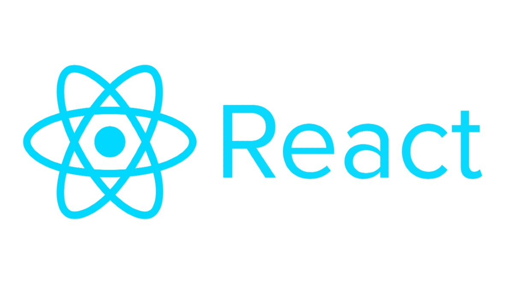
- Video (If you don't Like Reading)
- Components
- JSX
- Rendering
- Props
- State
- Lifecycle Methods
- Handling Events
- Conditional Rendering
- Lists and Keys
React Main Concepts
React Video
Check out this video as a crash course to React:
https://www.youtube.com/watch ?v=Ke90Tje7VS0
If you find this video confusing, or prefer a different one as a React intro, please let us know :)
If you prefer reading to watching videos, this guide is helpful:
Components
React is built around the concept of components. Components are reusable, self-contained units that encapsulate the UI and behavior of a part of the application. React applications are typically composed of many components.
function MyComponent() {
return <div>Hello, World!</div>;
}
JSX
JSX (JavaScript XML) is a syntax extension for JavaScript that allows you to write HTML-like code within your JavaScript. It's used in React to define the structure of components.
const element = <h1>Hello, world!</h1>;
Rendering
React renders components into the DOM (Document Object Model). You can use the ReactDOM library to render a component into a specific HTML element.
ReactDOM.render(<MyComponent />, document.getElementById('root'));
Props
Props (short for properties) allow you to pass data from a parent component to a child component. This enables you to create dynamic and reusable components.
function Greeting(props) {
return <div>Hello, {props.name}</div>;
}
State
State is a way to store and manage data that can change over time. It is used to make components dynamic and interactive.
class Counter extends React.Component {
constructor(props) {
super(props);
this.state = { count: 0 };
}
}
Lifecycle Methods
React components have a lifecycle, and you can use lifecycle methods to perform actions at various stages of a component's existence. For example, componentDidMount is called after a component is rendered.
componentDidMount() {
// Perform initialization after rendering.
}
Handling Events
You can define event handlers in React components to respond to user interactions, such as clicks or input changes.
function Button() {
function handleClick() {
console.log('Button clicked');
}
return <button onClick={handleClick}>Click me</button>;
}
Conditional Rendering
You can use conditional statements and expressions to conditionally render different parts of a component based on certain conditions.
function Greeting(props) {
if (props.isLoggedIn) {
return <div>Welcome, User!</div>;
} else {
return <div>Please log in.</div>;
}
}
Lists and Keys
React provides a way to render lists of elements efficiently and assigns unique keys to each item in the list for optimization.
const numbers = [1, 2, 3, 4, 5];
const listItems = numbers.map((number) => <li key={number}>{number}</li>);
React utilizes several JavaScript features and concepts like arrow functions, classes, callbacks, promises, and async/await to create dynamic and interactive user interfaces. Let's explore each of these in detail and discuss how they are related and integrated in React:
Javascript For React:
Arrow functions, classes, callbacks, promises, and async/await are fundamental JavaScript concepts that are commonly used in React. Let's explore each of these topics and how they are related and integrated in React:
Arrow Functions:
Arrow functions are a concise way to write functions in JavaScript. They are commonly used in React for defining components and functions, as they have a more compact syntax compared to traditional function expressions. Arrow functions capture the this value of the enclosing context automatically, making them suitable for working within React components and event handlers.
Example of an arrow function defining a React component:
const MyComponent = () => {
return <div>Hello, World!</div>;
};
Classes:
Classes in JavaScript are used to define and create objects with methods and properties. In React, components are often defined as classes, especially when they need to manage component state and lifecycle methods. React class components extend the React.Component class and can have methods like render, componentDidMount, and more for handling component behavior.
Example of a React class component:
class MyComponent extends React.Component {
render() {
return <div>Hello, World!</div>;
}
}
**Note on functional versus class-based components**
When React was first created, class-based components were the standard. But functional components were introduced later, and they eclipse class-based components in every way.
Our advice: Ironically, you should probably never use class-based components!
Stick to functional components. They are more modern and more versatile.
Lots of tutorial content online still uses class-based components. If you stumble upon a tutorial or explanation that uses a class-based component, and you're new to React, please search for a functional-component alternative instead!
Callbacks:
Callbacks are functions that are passed as arguments to other functions and are executed at a later time or in response to an event. React uses callbacks extensively, especially in event handling. For example, you can pass callback functions to event handlers to respond to user interactions.
Example of a callback function for handling a button click:
function handleClick() {
console.log('Button clicked');
}
<button onClick={handleClick}>Click me</button>
Promises:
Promises are a way to handle asynchronous operations in JavaScript. They represent a value that might be available now, or in the future, or never. Promises have three states: pending, fulfilled, and rejected.
-
Creating Promises: You can create a promise using the
Promiseconstructor. It takes a function with two arguments:resolveandreject. You typically perform an asynchronous operation in this function and callresolvewhen the operation is successful orrejectwhen it fails.const myPromise = new Promise((resolve, reject) => { // Asynchronous operation if (operationSucceeded) { resolve(result); } else { reject(error); } }); -
Chaining Promises: Promises can be chained together using
.then()and.catch()to handle the resolved value or errors. This chaining allows you to compose complex asynchronous operations.myPromise .then((result) => { // Handle success }) .catch((error) => { // Handle error });
async/await:
async and await are modern JavaScript features for working with asynchronous code. They make asynchronous code more readable and maintainable.
-
asyncFunction: Anasyncfunction is a function that always returns a promise. It allows you to use theawaitkeyword inside the function to pause execution until the promise is resolved.async function fetchData() { const data = await fetch('https://api.example.com/data'); return data.json(); } -
awaitKeyword: Theawaitkeyword can only be used inside anasyncfunction. It pauses the execution of the function until the promise is resolved, and it returns the resolved value.const result = await myPromise; // The code here will not execute until myPromise is resolved.
Promises and Aysnc/Await Integration in React:
React applications often involve asynchronous operations, such as fetching data from APIs or making network requests. Promises, async/await, and React's lifecycle methods can be integrated for managing asynchronous tasks effectively:
-
Fetching Data: You can use
async/awaitto fetch data in React components. Typically, you do this insidecomponentDidMount()or within functional components using theuseEffecthook.async componentDidMount() { try { const response = await fetch('https://api.example.com/data'); const data = await response.json(); this.setState({ data }); } catch (error) { console.error('Error fetching data:', error); } } -
Updating Component State: Once the data is fetched, you can update the component state to trigger a re-render with the new data.
-
Handling Errors: Use
try/catchto handle errors gracefully. You can also integrate error boundaries in React to catch errors in the component tree. -
Using Promises: React works well with Promises, and you can use
.then()and.catch()to manage asynchronous operations. However,async/awaitis often preferred for its more readable and synchronous-like syntax.
Integrating Promises and async/await in React allows you to manage asynchronous operations in a clean and structured way, providing a better user experience by preventing UI blocking during data retrieval.
More React:
Events in React
Event Handling
In React, events are used to capture and respond to user interactions, such as clicks, input changes, and mouse movements. Event handling in React is similar to handling events in traditional HTML, but there are some differences due to React's synthetic event system.
In React, you define event handlers as functions and attach them to JSX elements using event attributes. Here's an example of how you might handle a click event in React:
function Button() {
function handleClick() {
console.log('Button clicked');
}
return <button onClick={handleClick}>Click me</button>;
}
The onClick attribute specifies the event handler function, handleClick, which will be executed when the button is clicked. React's synthetic event system provides a consistent API for handling events across different browsers.
Event Object
In React, event handlers are passed an event object as an argument. This object contains information about the event, such as the type of event, target element, and any event-specific data. You can access event properties and methods within your event handler functions.
function handleChange(event) {
console.log('Input value:', event.target.value);
}
Higher Order Components (HOCs) in React
What Are HOCs?
Higher Order Components are a design pattern in React that allows you to reuse component logic by wrapping one or more components with a higher-order component. HOCs are not a part of the React API; they are a pattern that leverages the composability of components.
How HOCs Work
HOCs are functions that take a component and return a new enhanced component. They can add props, modify behavior, or encapsulate certain functionality. For example, you might create an HOC that provides authentication, access control, or data fetching capabilities to a component.
Here's a simplified example of a higher order component that provides a "loading" indicator to a component:
function withLoadingIndicator(WrappedComponent) {
return function WithLoadingIndicator(props) {
if (props.isLoading) {
return <div>Loading...</div>;
}
return <WrappedComponent {...props} />;
};
}
Using HOCs
You can use an HOC by wrapping your component with it. For instance, suppose you have a component called MyComponent, and you want to add a loading indicator using the withLoadingIndicator HOC:
const MyComponentWithLoading = withLoadingIndicator(MyComponent);
Now, MyComponentWithLoading is a new component that includes the loading indicator logic from the HOC. You can render it as you would with any other component.
<MyComponentWithLoading isLoading={true} />
Benefits of HOCs
HOCs enable you to separate concerns and promote reusability. They help you avoid code duplication by encapsulating common functionality in a separate function. This makes your code more maintainable and flexible, allowing you to compose and extend component behavior as needed.
Relationship Between Events and HOCs
Events and HOCs can work together in a React application. For instance, you might create an HOC that handles common event-related logic, such as tracking user interactions, and then wrap components that need that behavior. This can help centralize event handling logic and make it reusable across multiple components. Additionally, you can pass event handling functions as props when composing components with HOCs, allowing for flexible customization of event behavior.
In summary, events in React are essential for capturing and responding to user interactions, while Higher Order Components are a design pattern that promotes reusability and composability of component logic. You can use HOCs to encapsulate and extend event-related logic, making it easier to manage event handling across your React application.
Props vs. State
Props and state are two fundamental concepts in React, and they play distinct roles in how components work.
Props
Props (short for properties) are a mechanism for passing data from a parent component to a child component. Props are read-only, meaning that the child component cannot modify the props it receives. They are used to customize or configure child components based on data from their parent.
Example of using props:
function Greeting(props) {
return <div>Hello, {props.name}</div>;
}
State
State is a way to store and manage data that can change over time within a component. State is used to make components dynamic and interactive. Unlike props, state is mutable, and components can change their internal state using the setState method. State is often used for data that the component needs to keep track of, such as user input or UI state.
Example of using state:
class Counter extends React.Component {
constructor(props) {
super(props);
this.state = { count: 0 };
}
render() {
return (
<div>
<p>Count: {this.state.count}</p>
<button onClick={() => this.setState({ count: this.state.count + 1 })}>
Increment
</button>
</div>
);
}
}
How They Relate and Are Integrated
Props and state are often used together to create dynamic and interactive React applications. Here's how they relate and are integrated:
-
Passing Data: Props are used to pass data from a parent component to its child components. This data can be initial data that a child component uses to render itself.
-
Updating Data: State is used to manage data that can change within a component. Components can have state and use it to keep track of user interactions, input, or changes in data.
-
Reactivity: When a parent component passes props to a child component, any changes to those props in the parent will re-render the child. This allows for dynamic updates.
-
State Management: State is local to the component that owns it, and changes in state trigger re-renders of that component, updating the UI as needed.
-
Lifting State: Sometimes, you might need to manage state at a higher level in the component tree and pass it down as props to child components. This is called "lifting state up."
In summary, props are for passing data from parent to child, while state is for managing data that can change within a component. Together, they enable you to build interactive and data-driven React applications. Hooks, especially the useState hook, make it easier to manage local state in functional components, further enhancing the capabilities of React functional components.
Hooks in Functional Components
React introduced Hooks in version 16.8 as a way to add state and side-effects to functional components, which were previously limited to stateless rendering.
In React, "stateless rendering" refers to the practice of creating functional components (also known as stateless functional components) that are purely responsible for rendering UI based on the input data provided through props. These components do not manage or maintain any internal state.
Out with the old in with the new KING, hooks allow you to reuse stateful logic and side-effects across components, making functional components more powerful and flexible.
Some of the most commonly used hooks include:
1. useState
This one might sound familiar from above, useState hook allows functional components to manage local state. It takes an initial state value and returns an array with the current state and a function to update it.
import React, { useState } from 'react';
function Counter() {
const [count, setCount] = useState(0);
return (
<div>
<p>Count: {count}</p>
<button onClick={() => setCount(count + 1)}>Increment</button>
</div>
);
}
2. useEffect
The useEffect hook enables you to perform side-effects in functional components. It takes a function that will be executed after every render, and you can specify dependencies to control when the effect should run.
import React, { useEffect, useState } from 'react';
function Example() {
const [data, setData] = useState([]);
useEffect(() => {
// Fetch data from an API and update the state
fetchData().then((result) => setData(result));
}, []); // Empty dependency array runs the effect only once
}
3. Other Built-in Hooks
React provides several other built-in hooks, such as useContext and useReducer, which allow you to manage context, state transitions, and references in functional components, respectively.
useContext: Allows you to access the context API within functional components. It's useful for sharing data across the component tree without prop drilling.
import React, { useContext } from 'react';
const ThemeContext = React.createContext('light');
function ThemedButton() {
const theme = useContext(ThemeContext);
return <button className={theme}>Themed Button</button>;
}
useReducer: This hook is used for more complex state management and state transitions. It's similar tosetStatebut offers more control over how state updates occur.
import React, { useReducer } from 'react';
const initialState = { count: 0 };
function counterReducer(state, action) {
switch (action.type) {
case 'increment':
return { count: state.count + 1 };
case 'decrement':
return { count: state.count - 1 };
default:
return state;
}
}
function Counter() {
const [state, dispatch] = useReducer(counterReducer, initialState);
return (
<div>
<p>Count: {state.count}</p>
<button onClick={() => dispatch({ type: 'increment' })}> Increment</button>
<button onClick={() => dispatch({ type: 'decrement' })}> Decrement</button>
</div>
);
}
4. Custom Hooks
You can create your own custom hooks to encapsulate and share component logic across different components. Custom hooks promote code reuse and maintainability.
// Custom hook for handling form input state
import { useState } from 'react';
function useFormInput(initialValue) {
const [value, setValue] = useState(initialValue);
const handleChange = (e) => {
setValue(e.target.value);
};
return {
value,
onChange: handleChange,
};
}
In summary, hooks in React are a way to manage state and side-effects in functional components. They integrate seamlessly with functional components, making it easier to write and maintain complex logic and enabling better code reuse. React's built-in hooks and the ability to create custom hooks provide a powerful toolset for building dynamic and interactive applications.
Great Resources(videos): https://www.youtube.com/watch?v=Jl4q2cccwf0&ab_channel=TheNetNinja
- useState: https://www.youtube.com/watch?v=4qVNaohzDWU&ab_channel=LogRocket
- useEffect:https://www.youtube.com/watch?v=gv9ugDJ1ynU&ab_channel=TheNetNinja
- useRef: https://www.youtube.com/watch?v=yCS2m01bQ6w&ab_channel=Codevolution
- useCallback: https://www.youtube.com/watch?v=-Ls48dd-vJE&ab_channel=BenAwad
React Ecosystem
Calling APIs
Calling APIs is a key part of any React App. It's what enables your app to communicate with the outside world - including, presumably, your backend.
Here's a helpful tutorial on the best practices for calling APIs in React:
https://www.youtube.com/watch?v=bYFYF2GnMy8
There's also a part 2:
https://www.youtube.com/watch?v=1tfd6ANaNRY
The best ways to fetch data are using the popular package Axos (https://www.npmjs.com/package/axios) or the vanilla JS _fetch _function (https://developer.mozilla.org/en-US/docs/Web/API/Fetch_API/Using_Fetch)
Once you have parsed the data, you'll probably want to store it in your state somehow (using useState or a redux store).
It is also good practice to encapsulate your entire API call into a custom hook, and name the hook according to what it does (ex. useFetchPokemonStats). This is also much easier to do if you use a state-management system like Redux, which is described below.
The methods described above let you call an API immediately upon rendering a certain component. But what happens if you want to manually trigger an API call (ex. after a certain action or event)?
Your API call should still use useEffect, and should look mostly like the calls you learned about in Part 1. The 1 difference is you need to guard the useEffect wisely in its dependency array.
As you recall, the dependency array of a useEffect contains everything that the useEffect depends upon - if any of its dependencies change, it will have a _side effect _of rerunning the useEffect.
So, you can define a specific variable which only changes when you want your API call to run. You can put that variable in the dependency array of the useEffect. When the action or event that you want to trigger the API call occurs, you should change the trigger variable. This change will trigger the useEffect to run. The trigger variable should never change except when you want the useEffect to run.
I personally like making my trigger variable an object which also contains any subvariables that my API call needs. So for example, if I was coding a call to a search API that included a text query and target price, my trigger object would contain those.
Here is an example of a very basic React application that calls an API to perform a search with a custom hook and a useEffect guarded by a trigger object as described above: https://github.com/Tech-Start-UCalgary/react-api-examples/tree/main/js-no-redux
useSWR
useSWR is a useful React hook for data fetching published by Vercel (creators of Next.js).
SWR stands for stale-while-revalidate. It allows for smart data fetching and encapsulates a lot of advanced fetching logic (like how often should you refetch? should you have a cache?) in a single line of code.
You should read more about useSWR here:
You can watch a video tutorial here:
https://www.youtube.com/watch?v=f7yjEdXgGiM
React Router
React Router is a popular library used for routing in React applications. Routing is the process of determining which UI components should be displayed based on the current URL or path. React Router helps you create single-page applications with multiple views and navigate between them without requiring full page reloads.
Here's an elaboration on React Router and its integration with React:
React Router Features:
-
Declarative Routing: React Router uses a declarative approach, where you define the routes and their corresponding components in a clear and organized manner. You specify what component should be rendered when a particular URL is matched.
-
Nested Routing: React Router supports nested routes, allowing you to create complex and hierarchical UI structures. This is especially useful for building multi-level menus or complex application layouts.
-
Route Parameters: You can define route parameters in your routes, allowing you to extract dynamic data from the URL. For example, a route like
/users/:idcan capture theidas a parameter. -
Programmatic Navigation: React Router provides a set of functions for programmatic navigation. You can change the route, push to the browser's history, or replace the current route using these functions. This is useful for actions like form submissions or after successful authentication.
-
Route Guards: React Router allows you to implement route guards for protecting routes based on user authentication or other conditions. This ensures that users can only access certain routes if they meet specific criteria.
Integration with React:
React Router is typically integrated into a React application as a separate library. Here's how it's commonly done:
-
Installation: You start by installing React Router as a package in your React project. You can use either
react-router-dom(for web applications) orreact-router-native(for mobile applications).npm install react-router-dom -
Router Component: You wrap your entire application (or a part of it) with a
<BrowserRouter>or<HashRouter>component provided by React Router. This component manages the application's navigation state and listens to changes in the URL.import { BrowserRouter as Router, Route, Switch } from 'react-router-dom'; function App() { return ( <Router> {/* Define your routes here */} </Router> ); } -
Route Configuration: Inside the
<Router>, you define your routes using the<Route>component. Each<Route>component specifies a path and the component to render when the path matches.<Route path="/home" component={Home} /> <Route path="/about" component={About} /> -
Route Navigation: To navigate between routes, you use the
<Link>component to create links or thehistoryobject to programmatically navigate.<Link to="/home">Home</Link> // OR history.push('/home'); -
Route Parameters: You can use route parameters to capture dynamic values from the URL. These parameters are accessible as props in the routed components.
<Route path="/user/:id" component={UserProfile} /> -
Nested Routes: You can nest routes by defining routes within the components rendered by other routes. This allows for hierarchical routing structures.
<Route path="/dashboard" component={Dashboard}> <Route path="/dashboard/profile" component={Profile} /> </Route>
By integrating React Router into your React application, you can create well-organized, client-side routing that provides a seamless and efficient user experience for navigating different parts of your application.
React with Redux
Redux is a widely used state container for javascript apps. As soon as your app reaches any level of data complexity, it makes a ton of sense to start using Redux to manage your state.
A fair warning: Redux will seem complicated at the beginning. That's completely expected! Push through that initial discomfort and you'll get used to it in no time :)
Here is a great introductory video to React-Redux:
https://www.youtube.com/watch?v=CVpUuw9XSjY
I highly recommend using **createSlice to setup your Redux Store. **It is a simple way to encapsulate creating actions and slicers in a simple, easy-to-read, easy-to-understand way. Here is a short video that does a great job explaining how to use createSlice:
https://www.youtube.com/watch?v=e0MEtFaQTZk
To access your Redux state and update your Redux state in React, I highly recommend using the twin hooks **useSelector **and useDispatch respectively. They are simple, easy, and elegant.
https://www.youtube.com/watch?v=3zoIigieur0
Lastly, Next.JS
Next.js is a framework built on top of React, designed to simplify and enhance the development of web applications. It provides several features and benefits while seamlessly integrating with React. Let's explore these aspects interactively:
Q1: What is Next.js?
Next.js is a framework for building web applications that are built on top of the React library. It simplifies many aspects of React development and adds capabilities for server-side rendering, routing, and more.
Q2: How does Next.js relate to React?
Next.js is an extension of React. It leverages React's component-based structure and allows you to build React applications while providing additional tools and features for server-side rendering, routing, and other optimizations.
Q3: What are some key features of Next.js?
Next.js offers several key features:
-
Server-Side Rendering (SSR): Next.js enables server-side rendering, which improves performance and SEO by rendering pages on the server before sending them to the client.
-
Routing: It includes a built-in routing system, so you can easily define and navigate between pages.
-
File-Based Routing: Routes are created based on the file structure, making it intuitive and easy to organize your application.
-
Automatic Code Splitting: It automatically splits your JavaScript code into smaller, more manageable chunks, optimizing loading times.
-
Static Site Generation (SSG): Next.js allows you to generate static HTML files at build time for even better performance and SEO.
Q4: How do you create a new Next.js app?
To create a new Next.js app, you can use the following commands:
npx create-next-app my-nextjs-app
cd my-nextjs-app
npm run dev
This will set up a new Next.js application and start the development server.
Q5: Can you explain the pages and routing in Next.js?
In Next.js, you create pages by simply adding files to the pages directory. Each file becomes a route. For example, if you create pages/about.js, you will have a route at /about.
Q6: How does Next.js handle data fetching?
Next.js allows you to fetch data during server-side rendering using the getServerSideProps function. This data can be injected into your React components as props.
export async function getServerSideProps() {
// Fetch data from an API or database
const data = await fetchData();
return {
props: { data },
};
}
Q7: What's the advantage of server-side rendering in Next.js?
Server-side rendering in Next.js improves the initial loading speed of your application and helps with search engine optimization (SEO). It also ensures that users see content more quickly.
Q8: How can I build a static website with Next.js?
Next.js provides static site generation (SSG) via the getStaticProps function. You can generate static HTML files for your pages at build time.
export async function getStaticProps() {
// Fetch data from an API or database
const data = await fetchData();
return {
props: { data },
};
}
Q9: Are there any limitations or trade-offs with Next.js?
While Next.js offers many advantages, it may introduce complexity to smaller projects. It requires server-side rendering, which might not be necessary for all applications.
Q10: Can I deploy Next.js applications to various hosting platforms?
Yes, you can deploy Next.js applications to a wide range of hosting platforms, including Vercel, Netlify, and AWS. These platforms often provide built-in support for Next.js, making deployment straightforward.
Next.js is a powerful tool that enhances React applications by providing features like server-side rendering, routing, and automatic code splitting. It simplifies the development process and improves performance. If you have more specific questions or need further information about Next.js, feel free to ask!
Tech Start's React Native Guide
Please get acquainted with our React Guide before you read this page, this is just a recommendation though. Transitioning from a good background in React to React Native is a relatively smooth process, as many concepts carry over. However, there are specific topics and components you should learn to effectively work with React Native. Here's an outline of the topics you need to cover:
Video Resources:
These tutorials should be sufficient to get started but this guide gives many more subtle topics that are not covered in these videos. Choose your weapon wisely.
- https://www.youtube.com/playlist?list=PL4cUxeGkcC9ixPU-QkScoRBVxtPPzVjrQ
- https://www.youtube.com/watch?v=0-S5a0eXPoc
React Native Basics:
Components in React Native
Components in React Native are similar to those in React, but with some variations and additional elements. Here's a more detailed breakdown:
1. Core Components:
React Native provides a set of core components that are similar to HTML elements. These include:
View: The fundamental component for creating UI layouts.Text: Used for displaying text.Image: For displaying images.ScrollView: For scrollable content.TextInput: For text input fields.- And many more.
2. Custom Components:
You can create your custom components just like in React. These components can be stateless functional components or class components. To create a custom component, use the View, Text, Image, and other core components to compose your UI.
Styling in React Native
Styling in React Native is different from traditional web development. You have various options for styling your components:
a. Inline Styles:
React Native supports inline styles using JavaScript objects. You can apply styles directly to components, like this:
<View style={{ flex: 1, backgroundColor: 'lightblue' }}>
<Text style={{ fontSize: 20, color: 'black' }}>Hello, React Native!</Text>
</View>
b. Stylesheets:
Using stylesheets, you can create reusable style definitions:
const styles = StyleSheet.create({
container: {
flex: 1,
backgroundColor: 'lightblue',
},
text: {
fontSize: 20,
color: 'black',
},
});
<View style={styles.container}>
<Text style={styles.text}>Hello, React Native!</Text>
</View>
c. Flexbox Layout:
React Native relies heavily on flexbox for layout design. It's similar to CSS flexbox but with a few differences. You can use properties like flex, alignItems, and justifyContent to control layout.
<View style={{ flex: 1, flexDirection: 'column', justifyContent: 'center', alignItems: 'center' }}>
<Text>Hello, React Native!</Text>
</View>
Layout in React Native
Understanding layout is vital in React Native to create responsive and visually appealing designs.
-
Flexbox Layout: Flexbox is the primary layout system in React Native. It allows you to design flexible and adaptive layouts. Key properties include:
flex: Determines how space is distributed among children.alignItems: Aligns items along the cross-axis (vertical alignment).justifyContent: Aligns items along the main axis (horizontal alignment).flexDirection: Sets the direction of the main axis.
-
Positioning: You can control the position of elements using properties like
position,top,left,right, andbottom. -
Dimensions: Set dimensions using
widthandheight. You can use percentages, fixed values, or dynamic values likeflex. -
Responsive Design: React Native allows you to create responsive designs using
Dimensionsand theonLayoutevent. -
Orientation Handling: Handle changes in device orientation by adjusting your layout accordingly. Use the
DimensionsAPI to detect changes. -
Stylesheet Composition: Compose styles using stylesheets and conditionally apply styles based on screen dimensions or other criteria.
-
Best Practices:
-
Separation of Concerns: Keep styles, logic, and presentation separate for better maintainability and code clarity.
-
Optimizing Styles: Optimize styles to reduce unnecessary re-renders and improve app performance.
-
By mastering these concepts related to components, styling, and layout in React Native, you can create rich and visually appealing mobile app user interfaces. Flexbox, in particular, is a powerful tool for creating flexible layouts, and understanding the nuances of styling is crucial for developing a professional-looking app.
Navigation:
Navigation is a crucial aspect of building mobile applications with React Native. It involves creating the structure and flow of your app, allowing users to move between different screens or views. The most common library for implementing navigation in React Native is React Navigation. Here's a more detailed overview of navigation in React Native:
1. Installing React Navigation:
- To get started with React Navigation, you need to install it in your project using npm or yarn:
npm install @react-navigation/native @react-navigation/stack
2. Stack Navigator:
- The Stack Navigator is one of the most commonly used navigators in React Navigation. It allows you to create a stack of screens where each screen is placed on top of the previous one. You can navigate between screens by pushing and popping them from the stack.
- To set up a Stack Navigator, you need to import it and define your screens.
import { createStackNavigator } from '@react-navigation/stack'; const Stack = createStackNavigator();
3. Defining Screens:
- Each screen in your app is defined as a React component. For example, you might have a HomeScreen and a ProfileScreen.
function HomeScreen() { // Your screen's content } function ProfileScreen() { // Your screen's content }
4. Navigating Between Screens:
- You can navigate between screens using navigation functions provided by React Navigation. For example, to navigate from the HomeScreen to the ProfileScreen:
In your HomeScreen component, you can useimport { NavigationContainer } from '@react-navigation/native'; import { createStackNavigator } from '@react-navigation/stack'; const Stack = createStackNavigator(); function App() { return ( <NavigationContainer> <Stack.Navigator> <Stack.Screen name="Home" component={HomeScreen} /> <Stack.Screen name="Profile" component={ProfileScreen} /> </Stack.Navigator> </NavigationContainer> ); }navigation.navigate('Profile')to navigate to the ProfileScreen.
5. Passing Data Between Screens:
- You can pass data from one screen to another using parameters. For example, you can send a user's ID to the ProfileScreen:
// In HomeScreen navigation.navigate('Profile', { userId: 123 }); // In ProfileScreen const userId = route.params.userId;
6. Drawer Navigation and Tab Navigation:
- React Navigation also supports Drawer and Tab navigations. The Drawer Navigator creates a sidebar menu for navigation, while the Tab Navigator allows you to switch between different tabs within an app.
7. Nested Navigation:
React Navigation allows you to nest navigators within each other, creating complex navigation structures. This can be useful when you have a tab navigator and want to use a stack navigator within one of the tabs, or if you want to combine different types of navigators for more intricate navigation patterns.
Here's an example of nesting a Stack Navigator within a Tab Navigator:
import { createBottomTabNavigator } from '@react-navigation/bottom-tabs';
import { createStackNavigator } from '@react-navigation/stack';
const Tab = createBottomTabNavigator();
const Stack = createStackNavigator();
// Define a tab navigator with a stack navigator in one of the tabs
function TabNavigator() {
return (
<Tab.Navigator>
<Tab.Screen name="Tab1" component={Tab1Component} />
<Tab.Screen name="Tab2" component={Tab2Component} />
<Tab.Screen name="Tab3" component={StackScreen} />
</Tab.Navigator>
);
}
// Define a stack navigator to use within a tab
function StackScreen() {
return (
<Stack.Navigator>
<Stack.Screen name="StackScreen1" component={StackScreen1Component} />
<Stack.Screen name="StackScreen2" component={StackScreen2Component} />
</Stack.Navigator>
);
}
8. Navigation Lifecycle:
React Navigation provides navigation lifecycle events that allow you to perform actions when a screen comes into view or goes out of view. Common lifecycle events include:
focus: Triggered when a screen comes into focus.blur: Triggered when a screen loses focus.didFocus: Triggered after the screen has come into focus.
You can add listeners to these events to perform actions or fetch data when a screen is in focus.
import { useFocusEffect } from '@react-navigation/native';
function MyScreen({ navigation }) {
// Add a focus event listener
useFocusEffect(
React.useCallback(() => {
// Perform actions when the screen comes into focus
console.log('Screen is in focus');
// You can also fetch data or make API calls here
}, [])
);
// ... rest of the screen component
}
9. Screen Options:
You can customize the appearance and behavior of each screen's navigation using the options property in your screen component. This allows you to set options like the screen title, header style, and more.
function MyScreen({ route, navigation }) {
// Define screen-specific options
React.useLayoutEffect(() => {
navigation.setOptions({
title: 'Custom Title',
headerStyle: {
backgroundColor: 'blue',
},
headerTintColor: 'white',
});
}, [navigation]);
// ... rest of the screen component
}
10. Navigation Methods:
React Navigation provides a set of methods that allow you to navigate between screens programmatically. Common methods include:
navigate: Navigate to a new screen in the same stack.push: Push a new screen onto the stack.pop: Pop the current screen from the stack.goBack: Navigate back to the previous screen.
These methods are accessible through the navigation prop in your screen components.
function MyScreen({ navigation }) {
return (
<View>
<Button title="Go to Screen2" onPress={() => navigation.navigate('Screen2')} />
<Button title="Push Screen3" onPress={() => navigation.push('Screen3')} />
<Button title="Go Back" onPress={() => navigation.goBack()} />
</View>
);
}
These features offer extensive flexibility in designing complex navigation structures and allow you to respond to navigation events and customize screen-specific options. Understanding these concepts is crucial for building intuitive and feature-rich navigation in your React Native applications.
Platform-Specific Code:
Platform-specific code in React Native involves writing code that is specific to either iOS or Android platforms. This is sometimes necessary when you want to implement platform-specific features, handle platform-specific behaviors, or optimize your app for a particular platform. Here's a more detailed overview of this topic:
1. Platform-Specific Components and Styling:
-
React Native allows you to conditionally render components or apply styles based on the platform. For example, you can use the
Platform.OSproperty to determine the platform:import { View, Text } from 'react-native'; import { Platform } from 'react-native'; const MyComponent = () => ( <View> <Text>Common Text</Text> {Platform.OS === 'ios' && <Text>iOS only Text</Text>} {Platform.OS === 'android' && <Text>Android only Text</Text>} </View> ); -
Similarly, you can conditionally apply styles:
import { StyleSheet } from 'react-native'; const styles = StyleSheet.create({ commonStyle: { // Common styles }, iosStyle: { // iOS-specific styles }, androidStyle: { // Android-specific styles }, }); const MyComponent = () => ( <View> <Text style={[styles.commonStyle, Platform.OS === 'ios' ? styles.iosStyle : styles.androidStyle]}> Platform-specific styling </Text> </View> );
2. Platform-Specific Modules:
-
In some cases, you might need to use platform-specific modules or APIs. React Native provides a way to do this using the
.ios.jsand.android.jsfile extensions. For example, you can have separate implementations for iOS and Android as follows:MyModule.ios.jsfor iOS-specific code.MyModule.android.jsfor Android-specific code.
-
React Native will automatically pick the right file based on the platform. This is useful when dealing with platform-specific features or APIs.
3. Conditional Logic:
-
You can use conditional logic to handle platform-specific behaviors. For instance, you might need to request permissions differently on iOS and Android or use platform-specific libraries.
import { PermissionsAndroid, Platform } from 'react-native'; async function requestLocationPermission() { if (Platform.OS === 'android') { // Android-specific logic for requesting permissions try { const granted = await PermissionsAndroid.request( PermissionsAndroid.PERMISSIONS.ACCESS_FINE_LOCATION, ); if (granted === PermissionsAndroid.RESULTS.GRANTED) { console.log('Location permission granted.'); } else { console.log('Location permission denied.'); } } catch (err) { console.warn(err); } } else if (Platform.OS === 'ios') { // iOS-specific logic for requesting permissions // ... } }
4. Platform-Specific Libraries:
-
There are times when you need to use platform-specific libraries or modules. React Native allows you to conditionally include these libraries based on the platform. You can use conditional
requirestatements to achieve this:let platformSpecificLibrary; if (Platform.OS === 'ios') { platformSpecificLibrary = require('ios-specific-library'); } else { platformSpecificLibrary = require('android-specific-library'); }
5. Native Modules:
- For highly platform-specific tasks, you might need to write native code (Objective-C/Swift for iOS or Java/Kotlin for Android) and create native modules. These native modules can be called from your React Native code, allowing you to perform platform-specific tasks.
Understanding how to handle platform-specific code is important for ensuring your React Native app functions correctly and efficiently on both iOS and Android devices. By using these techniques, you can create a seamless and native-like experience for users on each platform.
Accessing Device Features:
Accessing device features in React Native involves interacting with native device functionality, such as the camera, geolocation, sensors, and more. Here, I'll provide more detail on this topic and examples of how to access specific device features:
-
Camera:
- To access the camera in React Native, you can use the
react-native-cameralibrary. This library allows you to capture photos and record videos. You can also customize the camera settings, switch between front and back cameras, and apply real-time image processing. - Example:
import { RNCamera } from 'react-native-camera'; // In your component <RNCamera type={RNCamera.Constants.Type.back} flashMode={RNCamera.Constants.FlashMode.auto} />
- To access the camera in React Native, you can use the
-
Geolocation:
- To access the device's location, you can use the built-in
Geolocationmodule in React Native. It provides methods for retrieving the user's current location and monitoring changes in real-time. - Example:
import Geolocation from '@react-native-community/geolocation'; // Get the current location Geolocation.getCurrentPosition((position) => { console.log(position.coords.latitude, position.coords.longitude); });
- To access the device's location, you can use the built-in
-
Sensors:
- React Native provides access to various device sensors, including the accelerometer, gyroscope, and magnetometer, through the
react-native-sensorslibrary. You can use this library to collect data from these sensors. - Example:
import { Accelerometer } from 'react-native-sensors'; const accelerometerObservable = new Accelerometer(); const subscription = accelerometerObservable.subscribe((data) => { console.log('Acceleration X:', data.x); console.log('Acceleration Y:', data.y); console.log('Acceleration Z:', data.z); });
- React Native provides access to various device sensors, including the accelerometer, gyroscope, and magnetometer, through the
-
Contacts:
- Accessing device contacts can be achieved using the
react-native-contactslibrary. This allows you to read and write contacts to the user's address book. - Example:
import Contacts from 'react-native-contacts'; // Fetch all contacts Contacts.getAll() .then((contacts) => { console.log(contacts); }) .catch((error) => { console.error(error); });
- Accessing device contacts can be achieved using the
-
Device Information:
- React Native provides device information through the
react-native-device-infolibrary. You can retrieve details like the device's manufacturer, model, unique identifier, and more. - Example:
import DeviceInfo from 'react-native-device-info'; // Get device information console.log('Device Model:', DeviceInfo.getModel()); console.log('Device ID:', DeviceInfo.getUniqueId());
- React Native provides device information through the
-
Bluetooth and NFC:
- To work with Bluetooth and NFC, you can use libraries like
react-native-ble-managerandreact-native-nfc-manager. These libraries enable communication with nearby devices and NFC tags. - Examples can get quite involved, as working with Bluetooth and NFC often requires handling various events and connections. You can refer to the library documentation for detailed examples.
- To work with Bluetooth and NFC, you can use libraries like
When accessing device features in React Native, it's essential to follow the documentation and best practices for the specific libraries and modules you're using. Additionally, consider handling permissions appropriately, especially for features like camera, geolocation, and contacts, which may require user consent.
Native Modules and Bridges:
Native modules and bridges in React Native are a way to access native code (Java or Objective-C) from JavaScript and vice versa. They are essential for tasks that require platform-specific functionality or performance optimization. Let's dive into more detail and provide examples of how to create and use native modules and bridges in React Native.
Native Modules
Native modules allow you to expose native code to JavaScript in a structured manner. Here's how to create a simple native module:
-
Create a Native Module for iOS (Objective-C):
Let's say you want to create a native module that shows a native iOS alert.
// AlertModule.h #import <React/RCTBridgeModule.h> @interface AlertModule : NSObject <RCTBridgeModule> @end// AlertModule.m #import "AlertModule.h" #import <React/RCTLog.h> @implementation AlertModule RCT_EXPORT_MODULE(); RCT_EXPORT_METHOD(showAlert:(NSString *)title message:(NSString *)message) { UIAlertController *alert = [UIAlertController alertControllerWithTitle:title message:message preferredStyle:UIAlertControllerStyleAlert]; UIAlertAction *ok = [UIAlertAction actionWithTitle:@"OK" style:UIAlertActionStyleDefault handler:nil]; [alert addAction:ok]; UIViewController *rootViewController = [[[[UIApplication sharedApplication] delegate] window] rootViewController]; [rootViewController presentViewController:alert animated:YES completion:nil]; } @end -
Create a Native Module for Android (Java):
To do the same thing in Android, create a native module to show an alert dialog.
// AlertModule.java import com.facebook.react.bridge.ReactApplicationContext; import com.facebook.react.bridge.ReactContextBaseJavaModule; import com.facebook.react.bridge.ReactMethod; public class AlertModule extends ReactContextBaseJavaModule { public AlertModule(ReactApplicationContext reactContext) { super(reactContext); } @Override public String getName() { return "AlertModule"; } @ReactMethod public void showAlert(String title, String message) { AlertDialog.Builder builder = new AlertDialog.Builder(getCurrentActivity()); builder.setTitle(title); builder.setMessage(message); builder.setPositiveButton("OK", null); builder.show(); } } -
Using Native Modules in JavaScript:
In your JavaScript code, you can now use the native module you created:
import { NativeModules } from 'react-native'; // For iOS NativeModules.AlertModule.showAlert('Hello', 'This is an alert!'); // For Android NativeModules.AlertModule.showAlert('Hello', 'This is an alert!');
Native Bridges
Bridges in React Native are responsible for connecting JavaScript and native code. React Native's native modules use bridges to enable communication between the two sides. In the examples above, the React Native framework handles the bridge for you.
Behind the scenes, React Native's bridge system serializes and deserializes data and manages the communication between JavaScript and native modules. It abstracts away many of the complexities, making it easier for developers to work with native modules in a JavaScript-friendly way.
By using native modules and bridges, you can incorporate platform-specific functionality into your React Native app while maintaining a unified JavaScript codebase. This is particularly helpful when you need to integrate with device-specific features, third-party libraries, or optimize performance.
Here are some tutorials that dive super in depth for creating a calender native module for Android or IOS.
State Management:
let's dive into more detail on state management in React Native and provide examples. State management is crucial for handling the data and UI state in your mobile applications. There are various options for managing state in React Native, similar to React for the web, including React's built-in state management, the Context API, and external libraries like Redux or MobX. Below, we'll cover these options and provide examples for better understanding:
1. React's Built-in State Management:
React Native, like React, allows you to manage state locally within a component using the useState hook.
Example:
import React, { useState } from 'react';
import { View, Text, Button } from 'react-native';
function Counter() {
const [count, setCount] = useState(0);
const increment = () => setCount(count + 1);
const decrement = () => setCount(count - 1);
return (
<View>
<Text>Count: {count}</Text>
<Button title="Increment" onPress={increment} />
<Button title="Decrement" onPress={decrement} />
</View>
);
}
In this example, the useState hook is used to manage the count state variable within the Counter component.
2. Context API:
The Context API allows you to manage global state that can be accessed by multiple components without having to pass props down through the component tree.
Example:
import React, { createContext, useContext, useState } from 'react';
import { View, Text, Button } from 'react-native';
const CountContext = createContext();
function Counter() {
const [count, setCount] = useContext(CountContext);
const increment = () => setCount(count + 1);
const decrement = () => setCount(count - 1);
return (
<View>
<Text>Count: {count}</Text>
<Button title="Increment" onPress={increment} />
<Button title="Decrement" onPress={decrement} />
</View>
);
}
function App() {
const [count, setCount] = useState(0);
return (
<CountContext.Provider value={[count, setCount]}>
<View>
<Text>My App</Text>
<Counter />
</View>
</CountContext.Provider>
);
}
In this example, the CountContext is created and used to share the count state between the Counter component and the App component.
3. Redux:
Redux is a popular external state management library for React Native. It provides a central store for managing application state and allows for predictable state updates using actions and reducers.
Example:
To use Redux in React Native, you need to set up a store, actions, and reducers. Here's a simplified example:
// Define actions
const increment = () => ({ type: 'INCREMENT' });
const decrement = () => ({ type: 'DECREMENT' });
// Define a reducer
const counterReducer = (state = 0, action) => {
switch (action.type) {
case 'INCREMENT':
return state + 1;
case 'DECREMENT':
return state - 1;
default:
return state;
}
};
// Create the Redux store
import { createStore } from 'redux';
const store = createStore(counterReducer);
// Connect components to the store
import { connect } from 'react-redux';
function Counter({ count, increment, decrement }) {
return (
<View>
<Text>Count: {count}</Text>
<Button title="Increment" onPress={increment} />
<Button title="Decrement" onPress={decrement} />
</View>
);
}
const mapStateToProps = (state) => ({ count: state });
const mapDispatchToProps = { increment, decrement };
const ConnectedCounter = connect(mapStateToProps, mapDispatchToProps)(Counter);
This example demonstrates a basic setup of Redux in React Native. It involves defining actions, a reducer, creating the store, and connecting a component to the store.
The choice of state management in your React Native project depends on the complexity and scalability of your application. React's built-in state management and the Context API are great for simple state needs, while Redux or MobX are more suitable for larger, complex applications with extensive state management requirements.
Async Storage:
AsyncStorage is a crucial concept in React Native, allowing you to store data locally on the user's device. It's similar to the localStorage in web development but tailored for mobile applications. AsyncStorage is often used to store user preferences, app settings, or any data that needs to persist across app sessions. Here, I'll dive into more detail about AsyncStorage and provide some examples.
Using AsyncStorage in React Native
-
Importing AsyncStorage: To use AsyncStorage, you need to import it from 'react-native':
import { AsyncStorage } from 'react-native'; -
Storing Data: You can store data in AsyncStorage by using the
setItemmethod. Here's an example of how to store a simple string:AsyncStorage.setItem('username', 'JohnDoe') .then(() => { console.log('Data stored successfully'); }) .catch((error) => { console.error('Error storing data: ', error); }); -
Retrieving Data: To retrieve data, you can use the
getItemmethod:AsyncStorage.getItem('username') .then((value) => { if (value !== null) { console.log('Retrieved data: ', value); } else { console.log('Data not found'); } }) .catch((error) => { console.error('Error retrieving data: ', error); }); -
Updating Data: You can update stored data by simply setting a new value for the same key:
AsyncStorage.setItem('username', 'NewUsername') .then(() => { console.log('Data updated successfully'); }) .catch((error) => { console.error('Error updating data: ', error); }); -
Deleting Data: To remove data from AsyncStorage, use the
removeItemmethod:AsyncStorage.removeItem('username') .then(() => { console.log('Data removed successfully'); }) .catch((error) => { console.error('Error removing data: ', error); }); -
Handling Errors: It's essential to handle errors, as reading from or writing to AsyncStorage may fail due to various reasons, such as storage limitations or permissions. Always use
try...catchor promise-based error handling to ensure your app gracefully handles errors. -
Working with JSON Data: AsyncStorage stores data as strings, so if you need to store complex data structures like objects or arrays, you should serialize them to JSON when storing and parse them when retrieving:
const user = { name: 'John Doe', email: 'john@example.com', }; AsyncStorage.setItem('user', JSON.stringify(user)) .then(() => { console.log('User data stored successfully'); }) .catch((error) => { console.error('Error storing user data: ', error); }); // Retrieving and parsing the user data AsyncStorage.getItem('user') .then((value) => { if (value !== null) { const userData = JSON.parse(value); console.log('Retrieved user data: ', userData); } else { console.log('User data not found'); } }) .catch((error) => { console.error('Error retrieving user data: ', error); });
Remember that AsyncStorage is a simple key-value store and should be used for relatively small amounts of data. For larger datasets, consider using a more robust storage solution or a database. Additionally, be mindful of security considerations when storing sensitive information and ensure that you have the necessary permissions to access AsyncStorage on the user's device.
Network Requests:
Making network requests in React Native is a common task when you need to fetch data from an API or send data to a server. You can use libraries like Axios or the built-in fetch API to perform these requests. Here, I'll dive into more detail about how to make network requests in React Native using both Axios and fetch, and provide examples for each:
Using Axios
Axios is a popular library for making HTTP requests. You can use it in your React Native project by following these steps:
-
Installation:
First, you need to install Axios in your project. You can do this with npm or yarn:
npm install axios # or yarn add axios -
Making a GET Request:
Here's an example of making a GET request to a remote API using Axios:
import axios from 'axios'; const fetchUserData = async () => { try { const response = await axios.get('https://api.example.com/users'); const userData = response.data; console.log(userData); } catch (error) { console.error('Error fetching user data:', error); } }; // Call the function to fetch user data fetchUserData(); -
Making a POST Request:
To make a POST request with Axios, you can do the following:
import axios from 'axios'; const sendDataToServer = async (data) => { try { const response = await axios.post('https://api.example.com/postData', data); console.log('Data sent successfully:', response.data); } catch (error) { console.error('Error sending data:', error); } }; const dataToSend = { key1: 'value1', key2: 'value2', }; // Call the function to send data to the server sendDataToServer(dataToSend);
Using the fetch API
The fetch API is a built-in way to make network requests in JavaScript and is available in React Native:
-
Making a GET Request:
Here's an example of making a GET request using the
fetchAPI:const fetchUserData = () => { fetch('https://api.example.com/users') .then((response) => { if (!response.ok) { throw new Error('Network response was not ok'); } return response.json(); }) .then((userData) => { console.log(userData); }) .catch((error) => { console.error('Error fetching user data:', error); }); }; // Call the function to fetch user data fetchUserData(); -
Making a POST Request:
Making a POST request with
fetchinvolves a similar structure:const sendDataToServer = (data) => { fetch('https://api.example.com/postData', { method: 'POST', headers: { 'Content-Type': 'application/json', }, body: JSON.stringify(data), }) .then((response) => { if (!response.ok) { throw new Error('Network response was not ok'); } return response.json(); }) .then((responseData) => { console.log('Data sent successfully:', responseData); }) .catch((error) => { console.error('Error sending data:', error); }); }; const dataToSend = { key1: 'value1', key2: 'value2', }; // Call the function to send data to the server sendDataToServer(dataToSend);
Both Axios and the fetch API allow you to make various types of requests (GET, POST, PUT, DELETE, etc.) and handle responses. The choice between the two often comes down to personal preference and specific project requirements. Axios is a popular choice due to its simplicity and ease of use for handling requests and responses.
Advanced Topics
Debugging and Troubleshooting:
- Familiarize yourself with debugging tools, error messages, and common troubleshooting techniques specific to React Native.
- RESOURCE: https://reactnative.dev/docs/debugging
Testing:
- Learn how to write unit tests and integration tests for your React Native components using testing frameworks like Jest.
- RESOURCE: https://reactnative.dev/docs/testing-overview
Performance Optimization:
- Explore techniques for optimizing the performance of your app, including reducing renders and optimizing images.
- RESOURCE: https://reactnative.dev/docs/performance
Publishing and Deployment:
- Understand how to build, sign, and deploy your app to the Google Play Store and Apple App Store.
- IOS RESOURCE: https://reactnative.dev/docs/publishing-to-app-store
- ANDROID RESOURCE: https://reactnative.dev/docs/signed-apk-android
Third-Party Integrations:
Third-party integrations in React Native are crucial for adding functionality and features to your app without having to build everything from scratch. Here, I'll provide more detail on some common third-party integrations in React Native along with links to the relevant libraries:
-
Push Notifications:
- Implementing push notifications is essential for engaging users. Libraries like
react-native-firebaseorreact-native-push-notificationprovide the tools to send and receive push notifications on both iOS and Android. - react-native-firebase
- react-native-push-notification
- Implementing push notifications is essential for engaging users. Libraries like
-
Analytics:
- Tracking user behavior and app performance is essential. Libraries like
react-native-firebase/analytics,react-native-google-analytics, andreact-native-flurry-analyticsenable integration with analytics platforms like Firebase Analytics, Google Analytics, and Flurry. - react-native-firebase/analytics
- react-native-google-analytics
- react-native-flurry-analytics
- Tracking user behavior and app performance is essential. Libraries like
-
Maps and Location:
- If your app requires mapping or location-based features, libraries like
react-native-mapsandreact-native-geolocation-serviceprovide access to Google Maps and geolocation services. - react-native-maps
- react-native-geolocation-service
- If your app requires mapping or location-based features, libraries like
-
Camera and Image Capture:
- For camera and image-related functionality, libraries like
react-native-cameraandreact-native-image-pickerallow you to access the device's camera and image gallery. - react-native-camera
- react-native-image-picker
- For camera and image-related functionality, libraries like
-
Social Media Sharing:
- To enable users to share content on social media platforms, libraries like
react-native-shareprovide sharing functionality with support for various services. - react-native-share
- To enable users to share content on social media platforms, libraries like
-
Payment Gateways:
- If your app involves in-app purchases or payment processing, libraries like
react-native-in-app-utilsor specific SDKs for payment gateways like Stripe can be integrated. - react-native-in-app-utils
- Stripe for React Native
- If your app involves in-app purchases or payment processing, libraries like
-
Authentication:
- Implementing user authentication is a common requirement. Libraries like
react-native-firebase/authandreact-native-auth0offer easy integration with Firebase Authentication and Auth0, respectively. - react-native-firebase/auth
- react-native-auth0
- Implementing user authentication is a common requirement. Libraries like
-
In-App Messaging:
- If your app needs real-time chat or messaging features, libraries like
react-native-gifted-chatcan be used to quickly add chat functionality. - react-native-gifted-chat
- If your app needs real-time chat or messaging features, libraries like
-
Audio and Video Playback:
- Libraries like
react-native-videoandreact-native-soundprovide support for playing audio and video files within your app. - react-native-video
- react-native-sound
- Libraries like
-
AR/VR Integration:
- If your app involves augmented reality (AR) or virtual reality (VR), libraries like
react-native-arkitorreact-virooffer AR and VR capabilities. - react-native-arkit
- ViroReact (formerly react-viro)
- If your app involves augmented reality (AR) or virtual reality (VR), libraries like
When integrating third-party libraries, make sure to check their documentation for installation and usage instructions, as well as any specific requirements or configurations. Carefully consider your app's requirements and select the libraries that best meet your needs while ensuring they are well-maintained and compatible with your React Native version.
Security Best Practices:
Security is a critical aspect of any mobile app, including those built with React Native. Here are some security best practices in React Native, along with examples:
-
Secure Storage:
- Use secure storage mechanisms to store sensitive data, such as user authentication tokens and API keys. Avoid storing them in plain text or insecure locations.
Example:
// Insecure storage const apiKey = 'my-insecure-api-key'; // Secure storage using a library like react-native-secure-storage import SecureStorage from 'react-native-secure-storage'; SecureStorage.set('api_key', 'my-secure-api-key'); -
API Key Management:
- Avoid hardcoding API keys directly in your source code. Instead, use environment variables or configuration files that are excluded from source control.
Example:
// Insecure API key storage const apiKey = 'my-insecure-api-key'; // Secure API key storage using environment variables const apiKey = process.env.REACT_NATIVE_API_KEY; -
Authentication and Authorization:
- Implement secure authentication and authorization mechanisms to protect user data and control access to sensitive parts of your app.
Example:
// Use a secure authentication library like Firebase Authentication or Auth0 import { Firebase } from 'react-native-firebase'; // Ensure that only authenticated users can access certain features if (user.isAuthenticated) { // Display sensitive data or allow certain actions } -
Network Security:
- Use HTTPS for all network requests to encrypt data in transit. Avoid sending sensitive information via unencrypted HTTP.
Example:
// Use HTTPS for network requests fetch('https://api.example.com/data', { method: 'GET', headers: { 'Content-Type': 'application/json', 'Authorization': 'Bearer ' + user.token, }, }) -
Code Obfuscation:
- Obfuscate your JavaScript code to make it more difficult for malicious actors to reverse engineer your app. Obfuscation is typically done using third-party tools, and the specific steps and tools used may vary depending on the project.
-
Secure Communication with Native Modules:
- When communicating with native modules, validate and sanitize data to prevent injection attacks.
Example:
import { NativeModules } from 'react-native'; // Ensure the data passed to a native module is properly sanitized const userInput = 'user-input-data'; NativeModules.MyModule.someMethod(validateInput(userInput)); -
Input Validation:
- Validate user input to prevent common security issues like SQL injection and cross-site scripting (XSS).
Example:
// Validate and sanitize user input to prevent XSS const userInput = '<script>alert("XSS attack");</script>'; const sanitizedInput = sanitizeInput(userInput); -
Error Handling:
- Implement proper error handling to prevent sensitive information from being exposed to users in error messages.
Example:
// Handle errors gracefully and do not expose sensitive information to the user try { // Code that may throw an error } catch (error) { console.error('An error occurred. Please try again later.'); }
These are essential security best practices for React Native apps, but it's important to note that the specific implementation details may vary depending on your project and the libraries you use. Regularly staying informed about security developments in the React Native ecosystem and taking proactive measures to address vulnerabilities will help ensure the security of your app.
Conclusion:
This guide was meant to be a starting/middle point for learning React Native across its many topics, ranging from front-end to back-end(mainly back-end because that is what really matters, am I right!). Jokes aside, as you progress through these topics, you'll find that your React experience serves as a strong foundation for learning React Native. React Native allows you to leverage your JavaScript skills to build mobile apps for both iOS and Android, making it a valuable addition to your toolkit.
Tech Start's Super Awesome Mega Web Dev Guide:)
Want to get into web dev? This guide should be your best friend. It covers some of the basic tools and languages you'll need to dive into the world of web development. Rather than providing tutorials, this guide focuses on directing you towards the best free online content to teach you the fundamentals.
Our advice:
- Go through at your own pace! You may need to spend more or less time on a particular topic depending on your experience level.
- Build practice websites and apps as you learn - you learn by doing.
- Take your own notes, especially for problems you encounter frequently
- Go beyond this guide! Tons of resources, courses, and tutorials are out there if you want to learn. Remember: google is a programmer's best friend.
This guide was originally developed for Tech Start UCalgary, an undergraduate club for software development and entrepreneurship at the University of Calgary. Check us out here -----> https://linktr.ee/techstartuofc <-----
Or at our website here ---> https://techstartucalgary.com <-----
If you're interested in contributing to this guide or in building similar guides for other areas (like Git, project management, or mobile development), please send me an email at joel.happ1@ucalgary.ca
Good luck on your web dev journey and enjoy the guide!
Part 1 - HTML
HTML is the building block of all webpages. It's ubiquitous throughout application design - everything from websites to mobile apps to desktop apps use HTML as the base for their frontend.

Luckily for you, HTML is also very simple. Don't spend too much time learning it as a beginner - while more advanced HTML concepts do exist, all you need to get started is a basic understanding of how it works.
To get started, I recommend watching this video and experimenting by building your own HTML document alongside it: https://www.youtube.com/watch?v=UB1O30fR-EE
To generate a favicon for your site, use this site: https://realfavicongenerator.net/
No matter which text editor you use (Atom, VSCode, Sublime Text, or something else), I recommend searching for editor plugins to improve your experience writing HTML. Google is your friend here.
Part 2 - CSS
If HTML is the backbone of frontends, CSS is the paint. It's an extremely versatile and powerful way of styling and beautifying your content. CSS is easy to get into, but very difficult to master- if front-end development interests you, I recommend dedicating a significant amount of time towards learning CSS.

To get started, check out this 1 hour introductory video to CSS:
https://www.youtube.com/watch?v=yfoY53QXEnI
Another alternative is this free course on Scrimba, which also covers HTML: https://scrimba.com/learn/htmlcss
One topic that isn't covered in much detail in the previous video is CSS selectors. For most purposes, you'll probably want to keep your selectors simple (using only class names the vast majority of the time). If you want to learn more about advanced selectors, check out this video: https://www.youtube.com/watch?v=Bcr70LIJcOk
When working on projects with other people, I recommend avoiding element-level selectors, as they can easily screw with work that others are doing.
Once you have a good grasp of the basics of CSS, one area that I highly recommend learning is CSS Grid. CSS Grid is a fantastic way of organizing and positioning html content, and it comes with loads of features that make it easy to build adaptive web pages. By combining CSS Grid with CSS breakpoints, you can design interfaces that look great on any size of screen, whether it's a big desktop computer or a small mobile phone.
Highly recommended course for CSS Grid: https://scrimba.com/learn/cssgrid
(Warning: CSS grid is not supported by some outdated browsers and browsers like Opera Mini which are used mostly in third world countries to save data. If your intended audience includes these people, do not use CSS Grid.)
How should you organize and refactor your CSS? I recommend using the BEM strategy for your CSS selectors. https://css-tricks.com/bem-101/
BEM is a particularly helpful methodology to adopt when you're building websites from components like in React, since you can keep the CSS for each component in a separate file. However, it's far from the only strategy for CSS organization, so you can research and adopt others if they suit your needs better.
Knowing CSS Flexbox is also helpful for arranging the layouts of websites. It's like
Finally, here is a great video to watch for some simple, powerful tips for writing modern CSS:
https://www.youtube.com/watch?v=Qhaz36TZG5Y
Part 3 - Javascript
JavaScript drives the interactivity and functionality of websites. Using it, you can respond to the user's interactions on your website and you can modify the properties of your HTML dynamically.

To get started with JavaScript, you can watch this playlist: https://www.youtube.com/playlist?list=PLDyQo7g0_nsX8_gZAB8KD1lL4j4halQBJ
If you're brand new to programming, you should spend more time learning the fundamentals of JavaScript.
There are a few areas of JavaScript which may be confusing to any newcomers to the language, even if you have previously learned other languages. I recommend practicing and studying to get used to these features.
Array functions: https://www.youtube.com/watch?v=rRgD1yVwIvE
_Asynchronous JavaScript (Await, Promises, Callbacks): _https://www.youtube.com/watch?v=_8gHHBlbziw
_JSON (JavaScript object notation): _https://www.youtube.com/watch?v=wI1CWzNtE-M
If you encounter another area of JavaScript that gives you troubles let me know and I'll add a section to this guide.
3.1 Node.js
Here's an introduction to Node.js: JavaScript, but for your operating system instead of your browser. https://www.youtube.com/watch?v=ENrzD9HAZK4 Node.js is frequently used as the backend for the server side of an application or web app.
Installing Node.js
We recommend using NVM (node version manager) to install node.js. It allows you to install, uninstall, and switch between different versions of node.js very quickly. Often, you'll need to switch between different versions of node for different projects, so you'll save time by using nvm from the start.
NVM (Mac/Linux): https://github.com/nvm-sh/nvm
NVM for windows: https://github.com/coreybutler/nvm-windows
Once installed, you can type "nvm" in your CLI to see a red list of commands you can use. Follow instructions on GitHub for proper usage!
Express
One of the most common Node.js frameworks is Express. Express is an unopinionated_ (meaning, it doesn't force you to do things any particular way) _framework that excels at allowing you to write APIs. We may include more content on Express here in the future.
3.2** TypeScript**
TypeScript is a superset of Javascript that introduces new features mostly related to strong typing: this lets you safeguard your variables and functions and helps you catch the most frequent mistakes and bugs from JavaScript code.
TypeScript is contained in .ts files, and using a compiler you can compile it into vanilla JavaScript .js files which run as expected on a computer. If you anticipate doing a lot of work with JavaScript, I highly recommend learning TypeScript - although it isn't necessary for every project, it immensely improves the quality of the coding experience and it can guide you towards mastering tricky concepts from JavaScript like promises and callbacks.
TypeScript tutorial by NetNinja:
https://www.youtube.com/playlist?list=PL4cUxeGkcC9gUgr39Q_yD6v-bSyMwKPUI
TypeScript Basics by JavaBrains: (also includes small project incl. API usage)
https://www.youtube.com/playlist?list=PLqq-6Pq4lTTanfgsbnFzfWUhhAz3tIezU
Part 4 - React
NOTE: here is a more indepth React Guide, the better version!!
HTML, CSS, and JS are great and all, but what if you want to make a modern, reactive website? Several frontend frameworks exist to empower dynamic, reactive sites, and as of 2021 React is by far the most popular among them. It's a great way to get an introduction into the world of web frameworks and it's a fun tool to use.
Here's a good free overview of the basics of React: https://scrimba.com/learn/learnreact
Plenty of similar courses are available on YouTube and other course platforms.
When in doubt, consult the React documentation: https://reactjs.org/docs/
Note that much of the documentation still uses class-based components, as opposed to function-based components. Nowadays, it is 99% preferable to use function-based components whenever possible. It cuts down on the amount of boilerplate you need to write and enables helpful features from hooks.
Learn more about React Hooks: https://www.youtube.com/watch?v=TNhaISOUy6Q
The 2 hooks in particular you should be very familiar with:
- **useState - **for basic state/data management
- useEffect - ubiquitous in React. It is used for creating consequences ("effects") for changes in data. It's a critical part of designing React applications to have a functional (not object-oriented) architecture, and you should be using it to create custom hooks.
Other hooks that are handy to know about are useRef, useCallback, and useLayoutEffect.
To learn React, you should know HTML, CSS, and JS before. You can also build React apps with TypeScript instead of JavaScript. https://www.typescriptlang.org/docs/handbook/react.html
React Context API
The context API is a tool you can use in React to share state from an upper level component (a provider) to its children. If you have state that needs to be shared across many children, you can use the context API rather than pass everything down manually as props.
To learn about the context API, I recommend watching this video:
https://www.youtube.com/watch?v=35lXWvCuM8o
**React Router **
If you want to make React websites with multiple pages, you can use React Router. It is a package that enables your app to have multiple routes. This series gives a quick overview of React Router:
https://www.youtube.com/watch?v=aZGzwEjZrXc&list=PL4cUxeGkcC9gZD-Tvwfod2gaISzfRiP9d&index=21
React Router is lightweight and best suited for very small projects. If you plan on building a larger website with React, we recommend using Next.js instead - it has a lot more features including pre-rendering pages on the server for SEO optimization. Next.js is also widely used and has industry-level support.

React Redux is a commonly used package for managing global state. It allows you to take care of state in a global store that can be accessed or modified from anywhere in your application.
https://www.youtube.com/watch?v=CVpUuw9XSjY
Using React with Typescript
Here is a great cheatsheet that you should read to get started with using React in combination with Typescript:
https://github.com/typescript-cheatsheets/react
That's it! .. for now :)
Happy hacking!
UI/UX Design Guide
Welcome to Tech Start’s UI/UX design guide, your roadmap to mastering the art of crafting user-friendly and visually appealing digital experiences!
Our goal is simple: to provide you with the tools and guidance necessary to understand the principles of effective design and apply them to your projects. Instead of overwhelming you with tutorials, we've curated a selection of online resources that cover everything from the basics to advanced techniques.
While this guide is a good starting point, there's a ton of resources available online. Everyone learns differently, so we encourage you to explore and find what methods work best for you!
Enjoy the guide and have fun designing! :)
Table of Contents
Design Process
Purpose: a design process helps you break down a project into manageable chunks and gives your work structure.
Terms like “design thinking” and “human-centered design” all boil down to the idea of understanding the needs and behaviors of users, and translating that understanding into a well-designed interface. So, keep the user front and center in your design approach!
There’s various design processes out there but we recommend using the double diamond design process.
The double diamond design process has 4 stages:
- Discover
- Define
- Develop
- Deliver
Note: this design process is not linear— it’s iterative. That means you may be revisiting certain stages to tweak and improve your designs as you work through the process.

We recommend taking a look at the following resources to get started:
Tasks to do at each stage/ Methods to use
As you make your way through the design process there’s various tasks/ methods you may use at each stage.
Discover phase:
- Competitive analysis
- User research
Define phase(at this stage you’ll be synthesizing your user research findings):
- Affinity mapping
- Empathy mapping
- Form a problem statement and How Might We (HMW) questions
- Ideate potential solutions
- Product Requirement Doc (PRD)
Note: to make your work easier, use FigJam templates to do the tasks for this phase.
Here’s some great FigJam Templates:
Develop phase:
- User flows & site maps
- Wireframes & low-fidelity prototypes
- User testing prototypes and iterating on your designs based on user feedback
Here’s some great FigJam Templates:
Deliver phase:
- High-fidelity prototypes (in Figma)
Below are some great resources to get you started with the tasks/ methods:
- Course - Covers intro to UI/UX, wireframing, prototyping with Figma
- Template - Competitive analysis
- Article - Affinity mapping
- Article - Empathy mapping
- Article - Problem statement
- Article - How Might We (HMW) questions
- Article - Product requirement doc
- Article - User flows
- Article - Sitemaps
User Research
Purpose: user research is conducted to understand user needs and preferences— it’ll ensure that your designs are intuitive and meet user expectations.
User research happens throughout the design process and there’s different methods you can use at each stage. Some user research methods provide qualitative data (like user interviews) and others may provide more quantitative data (like close-ended surveys). Choosing which research method to use depends on various things like time availability, your research goals, type of product you’re building, etc.
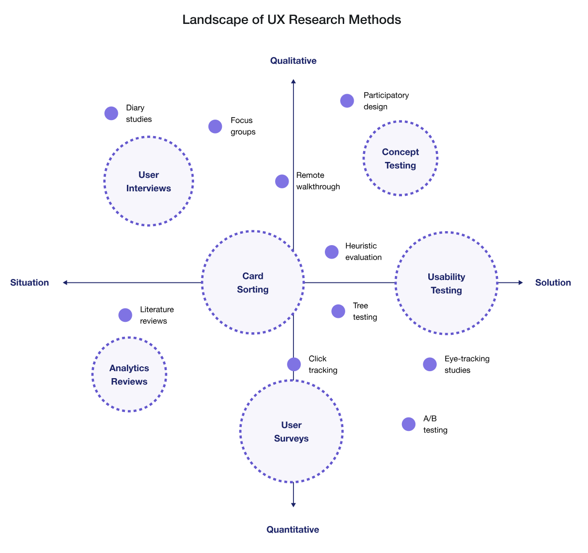
We recommend starting with simple methods such as surveys and user interviews.
Best practices to keep in mind for your research questions:
- Keep it short (5-10 questions)
- Keep it simple (use clear and concise language)
- Avoid leading questions
Best practices to keep in mind for user interviews:
- Use active listing techniques (build rapport with the participant, ask relevant follow-up questions)
- Record & transcribe your interviews
Here’s an example of what a good survey question may look like:
- What problems do you face while trying to do (given task)? (select all that apply)
Here’s some examples of what good user interview questions may look like:
- How do you currently go about doing (given task)?
- What do you like about how you currently perform (given task)?
- What is the biggest pain point when performing (given task)?
Below are some great resources to get started with user research:
Usability Testing
Purpose: usability testing will identify and address any usability issues— it’ll ensure your designs are intuitive and easy to use for its intended audience.
Once you have a working prototype, you’ll want to test that with users to get feedback on your designs.
With your usability testing, focus on exploratory tasks where you give users a realistic scenario and tasks to perform. For example, you could ask the user “add an item to your cart”, or “find an event to attend”. You want to see if (and where) users may get stuck doing a task— this will let you know which part of your design needs more work.
NOTE: testing with at least 5 users will give you sufficient feedback on your designs (these users can be fellow students, etc.)
Resources to get your started:
Working in Figma
Purpose: use Figma to create your low and high fidelity prototypes that you can share with your team.
Figma's official website offers a ton of learning resources to guide you on your Figma learning journey!

An important consideration as you work on your designs is to share your Figma file with your team members to get feedback on the technical feasibility of your designs.
Resources to get started with Figma:
Knowing how to use various things in Figma like: components, auto layout, and grids will help you design more efficiently.
Using Components
“Components are elements you can reuse across your designs. They help to create and manage consistent designs across projects.” - Figma

Here’s a great resource to get your stated:
Using Auto Layout
Auto layout is important for creating responsive interfaces. “It lets you create designs that grow to fill or shrink to fit, and reflow as their contents change” - Figma
Resources for learning auto layout:
Using Grids
Using grids will provide visual structure to your designs. They’ll make your designs look clean & organized.

Here’s a good rule of thumb to follow for designing layouts for different screen sizes:
- For desktops - 12 columns
- For tablets - 8 columns
- For mobile devices - 4 columns
Resources to learn more:
Other Resources
There’s various Figma plugins, UI kits, and other resources you can use to make your workflow easier.
What you use will depend on your needs & project— so feel free to find ones suited for you!
Here’s an example of a plugin for Figma:
Figma community is also a great resource for finding templates, plugins and UI kits.
Also, for a more comprehensive guide on design methods, take a look at this article.
Other Design Considerations
Where to Look for Inspiration
You might want to look at existing user interfaces to get inspiration for your own project. We recommend the following resources:
- Dribbble
- Behance
- Scope existing platforms that are similar to your app that have good UI/UX & take inspo from their designs
Design Documentation
It’s essential to document your designs. It’ll help you communicate the specifics of your designs with your team members and others.
Below is a good example of a card that documents the design of a screen. Your major screens and user flows should be documented.

Accessibility and Inclusion in Design
Here’s something important to keep in mind as you design. You want to ensure that everyone can use your designs— regardless of their abilities.
That means using colors, typography, etc. that are accessible to all users.
Here’s a great article to get started: Accessibility Guidelines for UX Designers
That’s all for now! :)
Cloud Computing
Cloud computing is the delivery of various computing services, such as servers, storage, databases, and software, over the internet. It provides faster innovation, flexibility, and cost savings, as you only pay for the services you use, allowing you to lower your costs and scale based on your business needs.
Benefits of Cloud Computing
- Cost Efficiency: Eliminate the upfront expense of hardware, software, and data centers by leveraging cloud infrastructure.
- Speed: Quickly deploy services with just a few clicks, reducing time to market.
- Global Scale: Scale services globally, delivering resources from the nearest location to ensure low latency and optimal performance.
- Productivity: Focus on core business objectives rather than managing physical servers and infrastructure.
- Reliability: Simplify data backup, disaster recovery, and business continuity through built-in redundancy.
- Security: Use advanced security features such as encryption and multi-factor authentication (MFA) to protect sensitive data.
- Performance: Improve performance by distributing workloads across multiple servers and geographic regions for speed and redundancy.
Types of Cloud Computing
- Public Cloud: Services are owned and operated by third-party cloud providers and delivered over the internet. You pay for only for what you use(AKA Operating expense-OpEx).
- Private Cloud: Infrastructure is owned and used exclusively by a single organization. you pay for all the Infrastructure upfront (AKA Capital expense-CapEx).
- Hybrid Cloud: Combines public and private cloud environments.
- Multi Cloud: Use multiple public cloud providers.
Cloud Platform Models
Cloud services come in more than one flavor. Choosing the right one will depend on your specific needs and how much fine control you'll need over the underlying gears and levers.
Infrastructure as a Service
Infrastructure as a Service (IaaS) products generally simulate the look and feel you'd get from managing physical resources. laaS products give you direct access to a provider's compute, storage, and networking assets. Because it's you that's in there playing around at the hardware level, rather than the laaS provider, you are responsible for the consequences of any bad configurations. The trade-off is that you get to closely configure every layer of your operating stack.
- Example:
- Amazon Web Services (AWS) EC2: Rent virtual servers to run applications with control over the OS and network settings.
Platform as a Service
Unlike laaS, Platform as a Service (PaaS) products simplify the process of building an application by hiding the complexity of the infrastructure that runs it. You're given an interface through which you define the behavior and environment you want for your application.
This will often include the code that will run your application.
- Example:
- Google App Engine: A fully managed environment for deploying web apps. Developers write code, and the platform handles scaling and other operational details.
Software as a Service
Software as a Service (SaaS) products offer services meant to be accessed by end users.
-
Example:
- An easily recognizable illustration is Google's Gmail service, which allows users to manage their email by logging in to a browser interface or through an email client (like Microsoft Outlook) that's running locally.
Shared Responsibilty Model
Resource: Microsoft's Shared Responsibility Model
📚 Further Reading
-
What is Cloud Computing?
From Microsoft Azure's Cloud Computing Dictionary -
Shared Responsibility in the Cloud
From Microsoft Azure's Cloud Computing Dictionary -
AWS Certified Solutions Architect Study Guide: Associate SAA-C01 Exam
By Ben Piper and David Clinton
ISBN: 978-1119504215
What is AWS?
Amazon Web Services (AWS) is the most popular and widely used cloud platform, offering over 200 services from data centers around the world. Millions of customers use AWS to reduce costs, work more efficiently, and speed up innovation.
Since AWS is a popular choice for many projects, we'll start by walking through how to set up a free account. Then, we'll explore some of the most widely-used AWS services and see how they can help you achieve your project goals.
Free Tier
AWS figures that the more comfortable you feel working with its services, the more likely you'll eventually start moving serious workloads to its cloud. So, AWS offers a generous Free Tier for the first 12 months after opening a new account. Under the Free Tier, you can freely experiment with light versions of most AWS services without being billed.
Once ready, you can click the link below to start setting up your account.
Creating your AWS account
⚠️ Important: Don't let the word "free" here trick you!
It is always important to track your usage to make sure you are staying within the free tier limits. Once you pass the threshold, you will start getting charged instantly.
The first approach is to watch your email box for any alerts regarding passing the free tier.
Stay tuned for more tips!
📚 Further Reading
-
What is AWS?
An overview of Amazon Web Services, explaining the core features and benefits. -
AWS Free Tier
Learn about the services available for free when you sign up for an AWS account.
AWS Databases
Overview of Cloud Databases
Cloud databases provide a modern solution for data storage and management. By hosting databases on the cloud, AWS allows businesses to focus on utilizing their data rather than managing database infrastructure. AWS databases offer a range of features that make them accessible, scalable, and efficient.
Benefits of Cloud Databases
- Scalability: Cloud databases scale resources up or down easily to match demand, ensuring optimal performance.
- Cost Efficiency: Pay only for what you use with AWS’s flexible pricing model.
- Reliability: AWS databases provide high availability and redundancy for dependable uptime.
- Managed Services: AWS takes care of database maintenance, backups, patching, and updates.
- Security: AWS databases come with robust encryption, access control, and monitoring options.
Types of Databases on AWS
AWS offers various database types, each offering features to specific workloads and application needs.
-
Relational Databases
- Structured with predefined schemas, relational databases are ideal for managing structured data and supporting complex transactions.
- Example: Amazon RDS (supports MySQL, PostgreSQL, and more).
-
Non-Relational Databases (NoSQL)
- Schema-less and designed to handle large volumes of unstructured or semi-structured data, NoSQL databases offer flexibility and speed.
- Example: Amazon DynamoDB, optimized for applications with high scalability and low-latency needs.
For detailed information on specific AWS database offerings, please refer to the subdirectories on Amazon RDS and DynamoDB.
📚 Further Reading
- AWS Database Services
An overview of Amazon Database Services, including Free Product Offers.
Amazon DynamoDB
Overview
Amazon DynamoDB is a fully managed NoSQL database service that provides single-digit millisecond response times, making it ideal for high-traffic applications. DynamoDB supports both key-value and document data models, allowing for flexible and dynamic data structures.
Data Model
- Key-Value: Optimized for handling large volumes of simple key-value data.
- Document-Based: Suitable for more complex, semi-structured data.
Key Features
- On-Demand and Provisioned Capacity: Choose between automatic scaling or pre-allocated capacity for more predictable costs.
- Global Tables: Multi-region, fully replicated tables for fast, consistent access across the globe.
- DynamoDB Streams: Enable real-time processing of data changes.
- Integration with AWS Lambda: Allows for seamless, serverless processing triggered by DynamoDB changes.
Use Cases
DynamoDB is ideal for:
- Applications needing high throughput and low-latency response times
- Real-time data processing and analytics
- Scalable applications like gaming, IoT, and e-commerce platforms
Create a table in DynamoDB
You can create a table using:
- AWS Management Console
- AWS CLI
- AWS SDK
Checkout the link below for steps on how to get started:
See the example below on how to create a table using AWS SDK for python(boto3):
import boto3
# Get the service resource.
dynamodb = boto3.resource('dynamodb')
# Create the DynamoDB table.
table = dynamodb.create_table(
TableName='users',
KeySchema=[
{
'AttributeName': 'username',
'KeyType': 'HASH'
},
{
'AttributeName': 'last_name',
'KeyType': 'RANGE'
}
],
AttributeDefinitions=[
{
'AttributeName': 'username',
'AttributeType': 'S'
},
{
'AttributeName': 'last_name',
'AttributeType': 'S'
},
],
ProvisionedThroughput={
'ReadCapacityUnits': 5,
'WriteCapacityUnits': 5
}
)
# Wait until the table exists.
table.wait_until_exists()
# Print out some data about the table.
print(table.item_count)
📚 Further Reading
-
AWS DynamoDB
An overview of the service -
Getting started with DynamoDB
A step by step Guide on how to start and manage your DynamoDB table -
Boto3 RDS Service Reference
Boto3 documentation for interacting with AWS DynamoDB using the AWS SDK for Python (Boto3).
Amazon Relational Database Service (RDS)
Overview
Amazon RDS (Relational Database Service) is a fully managed service that simplifies the setup, operation, and scaling of relational databases in the cloud. RDS supports popular database engines, enabling users to choose the one that best fits their application’s needs.
Supported Database Engines
Amazon RDS supports several database engines:
- MySQL
- PostgreSQL
- Oracle
- Microsoft SQL Server
- MariaDB
- Amazon Aurora (MySQL and PostgreSQL compatible)
Key Features
- Automated Backups: Automatically managed, including point-in-time recovery.
- Monitoring and Metrics: Integration with Amazon CloudWatch for detailed insights.
- High Availability with Multi-AZ: Ensures reliability through automatic failover and replication.
- Performance and Scaling: Easily modify instance types or storage capacity without downtime.
Use Cases
Amazon RDS is suitable for applications that require:
- Complex queries and transactions
- High data integrity with ACID compliance
- Enterprise applications needing strong data consistency
Creating a DB instance
You can create an Amazon RDS DB instance using the AWS Management Console, the AWS CLI, or the RDS API. To Read more about this, please refer to the documentation here
📚 Further Reading
-
AWS RDS
An overview of the service -
Boto3 RDS Service Reference
Boto3 documentation for interacting with AWS RDS using the AWS SDK for Python (Boto3).
AWS Lambda
Overview
AWS Lambda is a serverless compute service that allows you to run code in response to events without managing servers. Simply upload your function code, and Lambda handles the patching, and infrastructure management.
Functions
Lambda functions are triggered by events such as API calls, file uploads to S3, or messages from services like SNS. Functions are stateless by default, meaning they don’t retain information between executions. AWS also supports stateful workflows using services like DynamoDB or Step Functions.
Benefits of Serverless:
- No Server Management: Focus on writing code without dealing with infrastructure.
- Automatic Scaling: Functions automatically scale to handle any level of traffic.
- Cost-Efficient: You only pay for the compute time when your code runs.
Example: Writing an AWS Lambda Function in Python
The AWS Lambda with Python documentation includes the following example code snippet for writing a Lambda function in Python:
import boto3
import botocore
def lambda_handler(event, context):
print(f'boto3 version: {boto3.__version__}')
print(f'botocore version: {botocore.__version__}')
In this example, the boto3 library is used, which is the AWS SDK (Software Development Kit) for Python. This library allows your Python applications to interact with various AWS services, such as Lambda, S3, and EC2. The code also imports botocore, which is a low-level library that boto3 relies on for making API requests to AWS services.
Creating a Lambda Function
To create a Lambda function, you need a deployment package. The deployment package is a .zip file archive or container image that contains your function code and any external libraries used in the code. However, you do not need to include boto3 in the dependencies, since it is already included in the AWS Lambda Python runtime environment.
Installing boto3
If you're testing or developing your Lambda function locally, you will need to install the boto3 library using pip. Run the following command:
pip install boto3
📚 Further Reading
-
AWS Lambda Overview
Official AWS documentation on AWS Lambda, its use cases, and features. -
Boto3 Lambda Service Reference
Boto3 documentation for interacting with AWS Lambda using the AWS SDK for Python (Boto3). -
Using AWS Lambda with Python
AWS documentation on how to develop AWS Lambda functions using Python.
Dealing With Conflict
Conflict resolution is the process of resolving differences and disputes between individuals, groups, or parties through peaceful means. It involves identifying and addressing the underlying causes of the conflict, promoting communication and understanding, cooperation, and finding a mutually acceptable solution, leading to increased productivity and satisfaction in personal and professional settings. When done correctly, it helps to manage and resolve differences and disputes effectively, preventing them from escalating into larger and more destructive problems.
The following document enumerates the trade-offs of all conflict management styles, and I highly encourage you to read it.
https://www.valamis.com/hub/conflict-management-styles.
Lastly, remember that conflict is not a bad thing. Instead, learn how to manage it and make the most out of it.
"If you want to go fast, go alone; if you want to go far, go together."
CSS
Is only recommended to learn CSS after you are familiar with HTML.
Fundamentals
MDN is all you'll need. Read it from beginning to end: https://developer.mozilla.org/en-US/docs/Web/CSS.
Particularly, focus on:
- The basic syntax, common attributes (color, font, border) and basic selectors.
- The Box Model.
- CSS Layouts (Flexbox and Grids as a minimum).
- Responsive Design and media queries.
Related utilities:
- https://css-tricks.com/snippets/css/a-guide-to-flexbox/
- https://css-tricks.com/snippets/css/complete-guide-grid/
Popular libraries
Learn only after you learn the fundamentals:
Advanced
When you want to architect a big scope system:
Be aware of
But not necessarily learn them:
HTML
Fundamentals
MDN is all you'll need. Read it from beginning to end: https://developer.mozilla.org/en-US/docs/Learn/HTML.
You should focus on the basics only (a, button, h1-h6, p, span, lists, div, input, ...).
HTML is not more complicated than that, learn about CSS next.
Management Styles
A management style is the way in which a manager works to fulfill their goals. Management style includes the way that a manager plans, organizes, makes decisions, delegates, and manages their staff.
All management styles are useful depending on the specific scenario, but it's important to identify when to use which one, since a wrong management style conduces the team to a dissatisfied, unengaged, inefficient, unmotivated, or frustrated state.
The following document enumerates the trade-offs of all management styles and I highly encourage you to read it.
https://www.valamis.com/hub/management-styles.
I would just add a last tip here:
Understand what motivates every person on your team.
For instance, remember that a team of volunteers is very different from a team of employees. On a volunteering team, the motivation factors usually are self-development and being part of a cause. The key in this setup is aligning the team's objectives with each person's definition of meaningfulness.
Secrets Management
In this Workshop, we'll learn how to properly store the secrets that your application's source code needs to run like database connection strings and third-party API access credentials, and do so even if people have access to your source code.
We'll be exploring three approaches used in industry, and talking about when to use one or the other:
- Git Crypt.
- SOPS - My favorite.
- Hashicorp's Vault.
We'll also talk a little bit about the Twelve-Factor app, particularly about factor #3: Configuration.
Pre-requisites
To be able to focus on the important aspects of this Workshop (secrets management) and avoid distractions we'll assume you are familiar with Git and the command line.
Please bring your laptop, the idea is that we'll work together step by step on small exercises that will teach you each of the tools.
Only MacOS and Linux are supported. If you are on Windows, please install WSL.
Please come to the workshop with the following tools ready to be used:
-
A terminal where you can enter commands, set environment variables, etc.
-
Git.
-
Git Crypt:
Run
$ brew install git-crypton MacOS, or$ apt install git-cryptor similar on Linux/WSL. -
Sops:
Run
$ brew install sopson MacOS, or$ apt install sopsor similar on Linux/WSL. -
Age:
Run
$ brew install ageon MacOS, or$ apt install ageor similar on Linux/WSL. -
Vault:
Please follow the instructions here: https://developer.hashicorp.com/vault/downloads.
Why?
Application secrets are critical for security. For example, if an attacker discovers the database credentials, then immediately this attacker would gain access to all of the applications data. Application secrets is the entrypoint for everything, they are the Keys of Heaven, and therefore, it's very important to make sure that only the right people can get access to those secrets.
In this line of making application secrets be only accessible to the right people we also need to make sure that developers can only access development secrets. It's very common to have at least 2 environments: Development and Production, and to have some kind of segmentation where only super admins can access Production secrets.
It also doesn't matter if your source code is private, you still want to protect your secrets because your source code may be leaked, as it has happened in the past to companies like Twitch.
There is also an argument about maintainability. Secrets are also configuration, namely, their values may change over time, even if the source code doesn't. For this reason it's recommended to strictly separate them from the source code.
Workshop Step by Step
Git-Crypt
https://github.com/AGWA/git-crypt
Enables you to encrypt/decrypt the parts of a git of repository.
The good:
- Versioned as code.
- It's simple to use.
- Great for a simple project, with no compliance needs.
The bad:
- You cannot have multiple keys. All people share the same encryption key, which means you cannot isolate environments, and therefore is not that useful in highly regulated industries.
- Unencrypted secrets touch the disk, which is not great if someone steals your laptop while unencrypted.
Steps:
-
As you can see, there are
devandprodsecrets withusernameandpassword, but they are encrypted, so we cannot see them unless we have they key. -
Download the key here
Note: This should be distributed through a secure channel (e.g. encrypted email). For the sake of simplicity you can download it here.
-
Now we want to decrypt the secrets, for this we have to:
$ git clone https://github.com/techstartucalgary/Docs.git docs $ cd docs docs $ cat src/workshops/secrets-management/git-crypt/secrets/dev/username <you should see gibberish> # Decrypt docs $ git-crypt unlock /path/to/key # You should see the secrets now docs $ cat src/workshops/secrets-management/git-crypt/secrets/dev/username docs $ cat src/workshops/secrets-management/git-crypt/secrets/dev/password # Encrypt docs $ git-crypt lock docs $ cat src/workshops/secrets-management/git-crypt/secrets/dev/username <you should see gibberish again> -
The next step is understanding how it works, so essentially you configure which paths of the repository are encrypted in a
.gitattributesfile like this one: https://github.com/techstartucalgary/Docs/blob/main/src/workshops/secrets-management/git-crypt/.gitattributes, where essentially we tell git-crypt to encrypt the files under the secrets/ folder. You can check which files are encrypted with$ git-crypt status not encrypted: src/workshops/secrets-management/README.md encrypted: src/workshops/secrets-management/git-crypt/secrets/dev/password encrypted: src/workshops/secrets-management/git-crypt/secrets/dev/username encrypted: src/workshops/secrets-management/git-crypt/secrets/prod/password encrypted: src/workshops/secrets-management/git-crypt/secrets/prod/username not encrypted: src/workshops/secrets-management/git-crypt/unsafe/key
Sops
https://github.com/mozilla/sops
Enables you to encrypt/decrypt JSON, YAML, or whole files.
The good:
- Versioned as code.
- You can have multiple keys and access control over a whole file, great for highly regulated industries.
- Keys can be connected to an AWS/GCP/Azure identity, which is great in corporate environments, and Age/PGP, which is great for other environments.
The neutral:
- Not that easy to use, but reasonable given the features.
The bad:
- Requires some training to get used to it.
Steps:
-
Visit https://github.com/techstartucalgary/Docs/tree/main/src/workshops/secrets-management/sops.
As you can see, there are
devandprodsecrets withusernameandpassword, but they are encrypted, so we cannot see them unless we have they key. -
Download the development key here and the production key here
Note: This should be distributed through a secure channel (e.g. encrypted email). For the sake of simplicity you can download it here.
-
Now we want to decrypt the secrets, for this we have to:
$ git clone https://github.com/techstartucalgary/Docs.git docs $ cd docs $ cd src/workshops/secrets-management/sops src/workshops/secrets-management/sops $ cat dev.yaml <you should see gibberish> src/workshops/secrets-management/sops $ cat prod.yaml <you should see gibberish> # Decrypt dev secrets with dev key src/workshops/secrets-management/sops $ SOPS_AGE_KEY_FILE=/path/to/dev/key sops -d dev.yaml # Decrypt prod secrets with dev key src/workshops/secrets-management/sops $ SOPS_AGE_KEY_FILE=/path/to/dev/key sops -d prod.yaml <you should see a failure, wrong key> # Decrypt prod secrets with prod key src/workshops/secrets-management/sops $ SOPS_AGE_KEY_FILE=/path/to/prod/key sops -d prod.yaml
Vault
The good:
- Big enterprises like it. Why? Maybe marketing? I assume is because it allows for centralization, which is important if you have hundreds of teams.
The neutral:
- Very flexible.
The bad:
- Another server to maintain.
- Not versioned as code.
- Not free.
Note: https://vault.kamadorueda.com will be only available during the workshop. If you are following this guide after the workshop, please use your own Vault instance instead.
Steps:
-
Login to the UI at https://vault.kamadorueda.com/ui. The token is
123. -
Let's put and get a secret out of it
$ export VAULT_ADDR=https://vault.kamadorueda.com # Login. The token is: 123 $ vault login $ vault kv put secret/your-name password=your-password $ vault kv get -field=password secret/your-name -
It's possible to define access control lists, policies, and grant each person a different token, or login with OIDC. It's very flexible.
Contributing
Please submit bug reports, feature requests, or general feedback to our Bug Tracker on GitHub.
Code contributions
The easiest way to contribute to this project is by clicking on the button in the top right corner of any page. This will open the corresponding page on GitHub, where you can add or modify content and then commit the change.
For more elaborate changes please:
- Fork the project from: https://github.com/techstartucalgary/docs.
- Follow the tutorial of mdBook, the tool we use to build and generate this documentation.
- Before you make a PR, please run markdownlint on the files you changed. I recommend using the VS Code extensions for ease of use.
- Make a PR!
Legal
- All of the code that you submit to our code repository will be licensed under the Creative Commons CC0 1.0 Universal and The Unlicense.
- By submitting code to our code repository you also certify that you agree to the following Developer Certificate of Origin.
Credits
Special thanks to Kevin Amado1 for writing these docs.
VP Development 2022. Feel free to connect with me on LinkedIn or GitHub, or read my personal website.
License
This project is released under either
the Creative Commons CC0 1.0 Universal license
and/or under the The Unlicense license,
at your discretion,
whose verbatim copies can be found below.
The Unlicense
-------------
This is free and unencumbered software released into the public domain.
Anyone is free to copy, modify, publish, use, compile, sell, or
distribute this software, either in source code form or as a compiled
binary, for any purpose, commercial or non-commercial, and by any
means.
In jurisdictions that recognize copyright laws, the author or authors
of this software dedicate any and all copyright interest in the
software to the public domain. We make this dedication for the benefit
of the public at large and to the detriment of our heirs and
successors. We intend this dedication to be an overt act of
relinquishment in perpetuity of all present and future rights to this
software under copyright law.
THE SOFTWARE IS PROVIDED "AS IS", WITHOUT WARRANTY OF ANY KIND,
EXPRESS OR IMPLIED, INCLUDING BUT NOT LIMITED TO THE WARRANTIES OF
MERCHANTABILITY, FITNESS FOR A PARTICULAR PURPOSE AND NONINFRINGEMENT.
IN NO EVENT SHALL THE AUTHORS BE LIABLE FOR ANY CLAIM, DAMAGES OR
OTHER LIABILITY, WHETHER IN AN ACTION OF CONTRACT, TORT OR OTHERWISE,
ARISING FROM, OUT OF OR IN CONNECTION WITH THE SOFTWARE OR THE USE OR
OTHER DEALINGS IN THE SOFTWARE.
For more information, please refer to <https://unlicense.org>
Creative Commons Legal Code
---------------------------
CC0 1.0 Universal
CREATIVE COMMONS CORPORATION IS NOT A LAW FIRM AND DOES NOT PROVIDE
LEGAL SERVICES. DISTRIBUTION OF THIS DOCUMENT DOES NOT CREATE AN
ATTORNEY-CLIENT RELATIONSHIP. CREATIVE COMMONS PROVIDES THIS
INFORMATION ON AN "AS-IS" BASIS. CREATIVE COMMONS MAKES NO WARRANTIES
REGARDING THE USE OF THIS DOCUMENT OR THE INFORMATION OR WORKS
PROVIDED HEREUNDER, AND DISCLAIMS LIABILITY FOR DAMAGES RESULTING FROM
THE USE OF THIS DOCUMENT OR THE INFORMATION OR WORKS PROVIDED
HEREUNDER.
Statement of Purpose
The laws of most jurisdictions throughout the world automatically confer
exclusive Copyright and Related Rights (defined below) upon the creator
and subsequent owner(s) (each and all, an "owner") of an original work of
authorship and/or a database (each, a "Work").
Certain owners wish to permanently relinquish those rights to a Work for
the purpose of contributing to a commons of creative, cultural and
scientific works ("Commons") that the public can reliably and without fear
of later claims of infringement build upon, modify, incorporate in other
works, reuse and redistribute as freely as possible in any form whatsoever
and for any purposes, including without limitation commercial purposes.
These owners may contribute to the Commons to promote the ideal of a free
culture and the further production of creative, cultural and scientific
works, or to gain reputation or greater distribution for their Work in
part through the use and efforts of others.
For these and/or other purposes and motivations, and without any
expectation of additional consideration or compensation, the person
associating CC0 with a Work (the "Affirmer"), to the extent that he or she
is an owner of Copyright and Related Rights in the Work, voluntarily
elects to apply CC0 to the Work and publicly distribute the Work under its
terms, with knowledge of his or her Copyright and Related Rights in the
Work and the meaning and intended legal effect of CC0 on those rights.
1. Copyright and Related Rights. A Work made available under CC0 may be
protected by copyright and related or neighboring rights ("Copyright and
Related Rights"). Copyright and Related Rights include, but are not
limited to, the following:
i. the right to reproduce, adapt, distribute, perform, display,
communicate, and translate a Work;
ii. moral rights retained by the original author(s) and/or performer(s);
iii. publicity and privacy rights pertaining to a person's image or
likeness depicted in a Work;
iv. rights protecting against unfair competition in regards to a Work,
subject to the limitations in paragraph 4(a), below;
v. rights protecting the extraction, dissemination, use and reuse of data
in a Work;
vi. database rights (such as those arising under Directive 96/9/EC of the
European Parliament and of the Council of 11 March 1996 on the legal
protection of databases, and under any national implementation
thereof, including any amended or successor version of such
directive); and
vii. other similar, equivalent or corresponding rights throughout the
world based on applicable law or treaty, and any national
implementations thereof.
2. Waiver. To the greatest extent permitted by, but not in contravention
of, applicable law, Affirmer hereby overtly, fully, permanently,
irrevocably and unconditionally waives, abandons, and surrenders all of
Affirmer's Copyright and Related Rights and associated claims and causes
of action, whether now known or unknown (including existing as well as
future claims and causes of action), in the Work (i) in all territories
worldwide, (ii) for the maximum duration provided by applicable law or
treaty (including future time extensions), (iii) in any current or future
medium and for any number of copies, and (iv) for any purpose whatsoever,
including without limitation commercial, advertising or promotional
purposes (the "Waiver"). Affirmer makes the Waiver for the benefit of each
member of the public at large and to the detriment of Affirmer's heirs and
successors, fully intending that such Waiver shall not be subject to
revocation, rescission, cancellation, termination, or any other legal or
equitable action to disrupt the quiet enjoyment of the Work by the public
as contemplated by Affirmer's express Statement of Purpose.
3. Public License Fallback. Should any part of the Waiver for any reason
be judged legally invalid or ineffective under applicable law, then the
Waiver shall be preserved to the maximum extent permitted taking into
account Affirmer's express Statement of Purpose. In addition, to the
extent the Waiver is so judged Affirmer hereby grants to each affected
person a royalty-free, non transferable, non sublicensable, non exclusive,
irrevocable and unconditional license to exercise Affirmer's Copyright and
Related Rights in the Work (i) in all territories worldwide, (ii) for the
maximum duration provided by applicable law or treaty (including future
time extensions), (iii) in any current or future medium and for any number
of copies, and (iv) for any purpose whatsoever, including without
limitation commercial, advertising or promotional purposes (the
"License"). The License shall be deemed effective as of the date CC0 was
applied by Affirmer to the Work. Should any part of the License for any
reason be judged legally invalid or ineffective under applicable law, such
partial invalidity or ineffectiveness shall not invalidate the remainder
of the License, and in such case Affirmer hereby affirms that he or she
will not (i) exercise any of his or her remaining Copyright and Related
Rights in the Work or (ii) assert any associated claims and causes of
action with respect to the Work, in either case contrary to Affirmer's
express Statement of Purpose.
4. Limitations and Disclaimers.
a. No trademark or patent rights held by Affirmer are waived, abandoned,
surrendered, licensed or otherwise affected by this document.
b. Affirmer offers the Work as-is and makes no representations or
warranties of any kind concerning the Work, express, implied,
statutory or otherwise, including without limitation warranties of
title, merchantability, fitness for a particular purpose, non
infringement, or the absence of latent or other defects, accuracy, or
the present or absence of errors, whether or not discoverable, all to
the greatest extent permissible under applicable law.
c. Affirmer disclaims responsibility for clearing rights of other persons
that may apply to the Work or any use thereof, including without
limitation any person's Copyright and Related Rights in the Work.
Further, Affirmer disclaims responsibility for obtaining any necessary
consents, permissions or other rights required for any use of the
Work.
d. Affirmer understands and acknowledges that Creative Commons is not a
party to this document and has no duty or obligation with respect to
this CC0 or use of the Work.